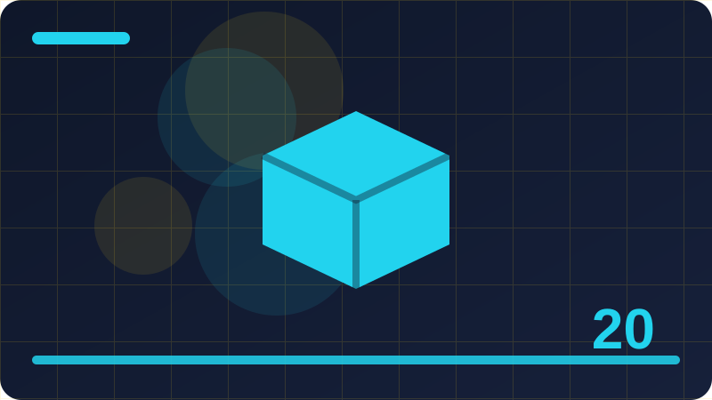

Chapter 20: Packages and Organising Code

Section 1: Why Code Needs Packages
In this section we explore why code needs packages step by step, using simple language and a concrete example you can follow. The idea may sound technical at first, but underneath it is a practical tool for organising a program so it stays readable and reliable. We begin by describing the problem this idea solves, then show how Go provides a clean way to solve it. As you read, try to picture where this idea would help in a program you have already written. That habit of connecting new ideas to your own work makes learning stick far better than reading passively and moving on quickly.
The way why code needs packages works becomes clearer when you compare it with the alternative of not using it at all. Without this idea, a program often repeats the same logic in several places, or it hides important decisions inside long functions that are hard to test. With this idea, you can separate concerns, name each part honestly, and change one part without breaking everything else. Go encourages this kind of separation, not through complicated rules, but through small features that combine well. Learning to notice that separation in other people's code is a useful skill, and it grows with practice.
The code example below shows why code needs packages in a small, complete program you can run and change. Read it slowly from top to bottom, and notice how each line contributes to the result. First, look at the names chosen, because good names carry much of the meaning in Go. Next, follow the flow of data through the program, asking at each step what value is held and where it goes next. Then run the program yourself, and try changing one small detail, such as a number or a string, to see how the output responds. That cycle of reading, running, and changing is the fastest way to turn a new idea into a skill you can rely on.
There are a few pitfalls worth knowing when you work with why code needs packages, and recognising them early will save you time. One pitfall is adding too much structure too soon, before you know what the program really needs. Another is choosing names that sound impressive but hide the actual purpose of the code. A third is forgetting to test the unusual cases, such as empty input, zero values, or unexpected order, where many programs first fail. None of these mistakes means you are a poor programmer, because every experienced Go developer has made them. The difference is that experienced developers check for them deliberately, rather than hoping they will not appear.
As you finish this section, think about where why code needs packages belongs in your own projects, and where it would only add noise. A good rule is to start with the simplest version that solves the problem, then introduce this idea only when it clearly makes the code clearer, safer, or easier to test. Try using it in a small practice program this week, and ask a fellow learner to read your code and explain it back to you.
package main
import "fmt"
func helper1() string {
return "helper for section 1 is ready"
}
func main() {
fmt.Println(helper1())
}Check: In your own words, what is the key idea of why code needs packages, and when would you use it in a Go program?
Section 2: What a Go Package Is
Here we turn to what a go package is, a topic that appears often in real Go programs and rewards careful study. Many beginners meet this idea in passing and feel unsure about it, so this section slows down and builds it up from the basics. We will define the idea simply, show what it looks like in code, and discuss where it fits in a larger program. Keep a notebook or a blank file open while you read, because writing a short summary in your own words after each paragraph will help you check whether the idea is truly clear.
At its heart, what a go package is is about making a program easier to reason about, one piece at a time. Go programs are often built from small parts that work together, and each part should be understandable on its own. This idea helps you draw those boundaries clearly, so you can test one part, reuse it elsewhere, and replace it later if a better approach appears. It is not a trick for experts only, and you should not feel that you must master every detail before using it. Start with the simple form shown here, use it in a tiny program, and let deeper understanding grow from that experience.
The code example below shows what a go package is in a small, complete program you can run and change. Read it slowly from top to bottom, and notice how each line contributes to the result. First, look at the names chosen, because good names carry much of the meaning in Go. Next, follow the flow of data through the program, asking at each step what value is held and where it goes next. Then run the program yourself, and try changing one small detail, such as a number or a string, to see how the output responds. That cycle of reading, running, and changing is the fastest way to turn a new idea into a skill you can rely on.
When what a go package is goes wrong, the symptoms are often subtle, so it helps to know what to look for. You might see output that is almost right but not quite, or a program that works for one input and fails for another. In those moments, resist the urge to change many things at once, because that makes it harder to learn which change actually fixed the problem. Change one thing, rerun the program, and observe the result carefully. Keep notes about what you tried, especially if you are working on a larger project, because those notes become a useful record of your reasoning and a guide for future debugging.
As you finish this section, think about where what a go package is belongs in your own projects, and where it would only add noise. A good rule is to start with the simplest version that solves the problem, then introduce this idea only when it clearly makes the code clearer, safer, or easier to test. Try using it in a small practice program this week, and ask a fellow learner to read your code and explain it back to you.
package main
import "fmt"
func helper2() string {
return "helper for section 2 is ready"
}
func main() {
fmt.Println(helper2())
}Check: In your own words, what is the key idea of what a go package is, and when would you use it in a Go program?
Section 3: Package Names and Folders
This section looks closely at package names and folders, and it explains the idea in plain words before any code appears. You do not need to remember a formal definition to follow along, because the goal is practical understanding first. We will start with what the idea means in everyday terms, then connect it to how Go expresses it in a program. By the end of this section you should be able to recognise the idea when you see it, explain it to another learner, and use it in a small example of your own. That steady progression from meaning to use is deliberate, because Go rewards learners who understand why a feature exists, not only how to type it correctly.
To understand how package names and folders works in Go, it helps to think about the job it does inside a program. Go was designed to keep programs simple, explicit, and easy to read, and this idea supports that goal by giving you a clear structure to follow. When you use it well, your code states its intention directly, so a reader does not have to guess what you meant. When you use it poorly, the code can become tangled, even if it still runs. That difference between code that merely works and code that communicates clearly is central to good Go practice, and it is worth keeping in mind throughout this section.
The code example below shows package names and folders in a small, complete program you can run and change. Read it slowly from top to bottom, and notice how each line contributes to the result. First, look at the names chosen, because good names carry much of the meaning in Go. Next, follow the flow of data through the program, asking at each step what value is held and where it goes next. Then run the program yourself, and try changing one small detail, such as a number or a string, to see how the output responds. That cycle of reading, running, and changing is the fastest way to turn a new idea into a skill you can rely on.
Beginners often stumble on package names and folders not because the idea is difficult, but because they try to use it before the simple case is clear. A common mistake is to copy a pattern from a larger program without understanding why it was chosen there, which can add complexity where none is needed. Another mistake is to ignore the small details, such as a missing check, a confusing name, or an assumption about input that may not hold. Watch for those traps in your own code, and slow down whenever a program behaves unexpectedly. Debugging is easier when you can explain, in plain words, what you expected to happen and what actually happened instead.
As you finish this section, think about where package names and folders belongs in your own projects, and where it would only add noise. A good rule is to start with the simplest version that solves the problem, then introduce this idea only when it clearly makes the code clearer, safer, or easier to test.
package main
import "fmt"
func helper3() string {
return "helper for section 3 is ready"
}
func main() {
fmt.Println(helper3())
}Check: In your own words, what is the key idea of package names and folders, and when would you use it in a Go program?
Section 4: The Main Package Explained
In this section we explore the main package explained step by step, using simple language and a concrete example you can follow. The idea may sound technical at first, but underneath it is a practical tool for organising a program so it stays readable and reliable. We begin by describing the problem this idea solves, then show how Go provides a clean way to solve it. As you read, try to picture where this idea would help in a program you have already written. That habit of connecting new ideas to your own work makes learning stick far better than reading passively and moving on quickly.
The way the main package explained works becomes clearer when you compare it with the alternative of not using it at all. Without this idea, a program often repeats the same logic in several places, or it hides important decisions inside long functions that are hard to test. With this idea, you can separate concerns, name each part honestly, and change one part without breaking everything else. Go encourages this kind of separation, not through complicated rules, but through small features that combine well. Learning to notice that separation in other people's code is a useful skill, and it grows with practice.
The code example below shows the main package explained in a small, complete program you can run and change. Read it slowly from top to bottom, and notice how each line contributes to the result. First, look at the names chosen, because good names carry much of the meaning in Go. Next, follow the flow of data through the program, asking at each step what value is held and where it goes next. Then run the program yourself, and try changing one small detail, such as a number or a string, to see how the output responds. That cycle of reading, running, and changing is the fastest way to turn a new idea into a skill you can rely on.
There are a few pitfalls worth knowing when you work with the main package explained, and recognising them early will save you time. One pitfall is adding too much structure too soon, before you know what the program really needs. Another is choosing names that sound impressive but hide the actual purpose of the code. A third is forgetting to test the unusual cases, such as empty input, zero values, or unexpected order, where many programs first fail. None of these mistakes means you are a poor programmer, because every experienced Go developer has made them. The difference is that experienced developers check for them deliberately, rather than hoping they will not appear.
As you finish this section, think about where the main package explained belongs in your own projects, and where it would only add noise. A good rule is to start with the simplest version that solves the problem, then introduce this idea only when it clearly makes the code clearer, safer, or easier to test. Try using it in a small practice program this week, and ask a fellow learner to read your code and explain it back to you.
package main
import "fmt"
func helper4() string {
return "helper for section 4 is ready"
}
func main() {
fmt.Println(helper4())
}Check: In your own words, what is the key idea of the main package explained, and when would you use it in a Go program?
Section 5: Importing a Package
Here we turn to importing a package, a topic that appears often in real Go programs and rewards careful study. Many beginners meet this idea in passing and feel unsure about it, so this section slows down and builds it up from the basics. We will define the idea simply, show what it looks like in code, and discuss where it fits in a larger program. Keep a notebook or a blank file open while you read, because writing a short summary in your own words after each paragraph will help you check whether the idea is truly clear.
At its heart, importing a package is about making a program easier to reason about, one piece at a time. Go programs are often built from small parts that work together, and each part should be understandable on its own. This idea helps you draw those boundaries clearly, so you can test one part, reuse it elsewhere, and replace it later if a better approach appears. It is not a trick for experts only, and you should not feel that you must master every detail before using it. Start with the simple form shown here, use it in a tiny program, and let deeper understanding grow from that experience.
The code example below shows importing a package in a small, complete program you can run and change. Read it slowly from top to bottom, and notice how each line contributes to the result. First, look at the names chosen, because good names carry much of the meaning in Go. Next, follow the flow of data through the program, asking at each step what value is held and where it goes next. Then run the program yourself, and try changing one small detail, such as a number or a string, to see how the output responds. That cycle of reading, running, and changing is the fastest way to turn a new idea into a skill you can rely on.
When importing a package goes wrong, the symptoms are often subtle, so it helps to know what to look for. You might see output that is almost right but not quite, or a program that works for one input and fails for another. In those moments, resist the urge to change many things at once, because that makes it harder to learn which change actually fixed the problem. Change one thing, rerun the program, and observe the result carefully. Keep notes about what you tried, especially if you are working on a larger project, because those notes become a useful record of your reasoning and a guide for future debugging.
As you finish this section, think about where importing a package belongs in your own projects, and where it would only add noise. A good rule is to start with the simplest version that solves the problem, then introduce this idea only when it clearly makes the code clearer, safer, or easier to test. Try using it in a small practice program this week, and ask a fellow learner to read your code and explain it back to you.
package main
import "fmt"
func helper5() string {
return "helper for section 5 is ready"
}
func main() {
fmt.Println(helper5())
}Check: In your own words, what is the key idea of importing a package, and when would you use it in a Go program?
Section 6: Import Paths in Plain Words
This section looks closely at import paths in plain words, and it explains the idea in plain words before any code appears. You do not need to remember a formal definition to follow along, because the goal is practical understanding first. We will start with what the idea means in everyday terms, then connect it to how Go expresses it in a program. By the end of this section you should be able to recognise the idea when you see it, explain it to another learner, and use it in a small example of your own. That steady progression from meaning to use is deliberate, because Go rewards learners who understand why a feature exists, not only how to type it correctly.
To understand how import paths in plain words works in Go, it helps to think about the job it does inside a program. Go was designed to keep programs simple, explicit, and easy to read, and this idea supports that goal by giving you a clear structure to follow. When you use it well, your code states its intention directly, so a reader does not have to guess what you meant. When you use it poorly, the code can become tangled, even if it still runs. That difference between code that merely works and code that communicates clearly is central to good Go practice, and it is worth keeping in mind throughout this section.
The code example below shows import paths in plain words in a small, complete program you can run and change. Read it slowly from top to bottom, and notice how each line contributes to the result. First, look at the names chosen, because good names carry much of the meaning in Go. Next, follow the flow of data through the program, asking at each step what value is held and where it goes next. Then run the program yourself, and try changing one small detail, such as a number or a string, to see how the output responds. That cycle of reading, running, and changing is the fastest way to turn a new idea into a skill you can rely on.
Beginners often stumble on import paths in plain words not because the idea is difficult, but because they try to use it before the simple case is clear. A common mistake is to copy a pattern from a larger program without understanding why it was chosen there, which can add complexity where none is needed. Another mistake is to ignore the small details, such as a missing check, a confusing name, or an assumption about input that may not hold. Watch for those traps in your own code, and slow down whenever a program behaves unexpectedly. Debugging is easier when you can explain, in plain words, what you expected to happen and what actually happened instead.
As you finish this section, think about where import paths in plain words belongs in your own projects, and where it would only add noise. A good rule is to start with the simplest version that solves the problem, then introduce this idea only when it clearly makes the code clearer, safer, or easier to test.
package main
import "fmt"
func helper6() string {
return "helper for section 6 is ready"
}
func main() {
fmt.Println(helper6())
}Check: In your own words, what is the key idea of import paths in plain words, and when would you use it in a Go program?
Section 7: Standard Library Packages
In this section we explore standard library packages step by step, using simple language and a concrete example you can follow. The idea may sound technical at first, but underneath it is a practical tool for organising a program so it stays readable and reliable. We begin by describing the problem this idea solves, then show how Go provides a clean way to solve it. As you read, try to picture where this idea would help in a program you have already written. That habit of connecting new ideas to your own work makes learning stick far better than reading passively and moving on quickly.
The way standard library packages works becomes clearer when you compare it with the alternative of not using it at all. Without this idea, a program often repeats the same logic in several places, or it hides important decisions inside long functions that are hard to test. With this idea, you can separate concerns, name each part honestly, and change one part without breaking everything else. Go encourages this kind of separation, not through complicated rules, but through small features that combine well. Learning to notice that separation in other people's code is a useful skill, and it grows with practice.
The code example below shows standard library packages in a small, complete program you can run and change. Read it slowly from top to bottom, and notice how each line contributes to the result. First, look at the names chosen, because good names carry much of the meaning in Go. Next, follow the flow of data through the program, asking at each step what value is held and where it goes next. Then run the program yourself, and try changing one small detail, such as a number or a string, to see how the output responds. That cycle of reading, running, and changing is the fastest way to turn a new idea into a skill you can rely on.
There are a few pitfalls worth knowing when you work with standard library packages, and recognising them early will save you time. One pitfall is adding too much structure too soon, before you know what the program really needs. Another is choosing names that sound impressive but hide the actual purpose of the code. A third is forgetting to test the unusual cases, such as empty input, zero values, or unexpected order, where many programs first fail. None of these mistakes means you are a poor programmer, because every experienced Go developer has made them. The difference is that experienced developers check for them deliberately, rather than hoping they will not appear.
As you finish this section, think about where standard library packages belongs in your own projects, and where it would only add noise. A good rule is to start with the simplest version that solves the problem, then introduce this idea only when it clearly makes the code clearer, safer, or easier to test. Try using it in a small practice program this week, and ask a fellow learner to read your code and explain it back to you.
package main
import "fmt"
func helper7() string {
return "helper for section 7 is ready"
}
func main() {
fmt.Println(helper7())
}Check: In your own words, what is the key idea of standard library packages, and when would you use it in a Go program?
Section 8: Your Own First Package
Here we turn to your own first package, a topic that appears often in real Go programs and rewards careful study. Many beginners meet this idea in passing and feel unsure about it, so this section slows down and builds it up from the basics. We will define the idea simply, show what it looks like in code, and discuss where it fits in a larger program. Keep a notebook or a blank file open while you read, because writing a short summary in your own words after each paragraph will help you check whether the idea is truly clear.
At its heart, your own first package is about making a program easier to reason about, one piece at a time. Go programs are often built from small parts that work together, and each part should be understandable on its own. This idea helps you draw those boundaries clearly, so you can test one part, reuse it elsewhere, and replace it later if a better approach appears. It is not a trick for experts only, and you should not feel that you must master every detail before using it. Start with the simple form shown here, use it in a tiny program, and let deeper understanding grow from that experience.
The code example below shows your own first package in a small, complete program you can run and change. Read it slowly from top to bottom, and notice how each line contributes to the result. First, look at the names chosen, because good names carry much of the meaning in Go. Next, follow the flow of data through the program, asking at each step what value is held and where it goes next. Then run the program yourself, and try changing one small detail, such as a number or a string, to see how the output responds. That cycle of reading, running, and changing is the fastest way to turn a new idea into a skill you can rely on.
When your own first package goes wrong, the symptoms are often subtle, so it helps to know what to look for. You might see output that is almost right but not quite, or a program that works for one input and fails for another. In those moments, resist the urge to change many things at once, because that makes it harder to learn which change actually fixed the problem. Change one thing, rerun the program, and observe the result carefully. Keep notes about what you tried, especially if you are working on a larger project, because those notes become a useful record of your reasoning and a guide for future debugging.
As you finish this section, think about where your own first package belongs in your own projects, and where it would only add noise. A good rule is to start with the simplest version that solves the problem, then introduce this idea only when it clearly makes the code clearer, safer, or easier to test. Try using it in a small practice program this week, and ask a fellow learner to read your code and explain it back to you.
package main
import "fmt"
func helper8() string {
return "helper for section 8 is ready"
}
func main() {
fmt.Println(helper8())
}Check: In your own words, what is the key idea of your own first package, and when would you use it in a Go program?
Section 9: Exported Names Start Uppercase
This section looks closely at exported names start uppercase, and it explains the idea in plain words before any code appears. You do not need to remember a formal definition to follow along, because the goal is practical understanding first. We will start with what the idea means in everyday terms, then connect it to how Go expresses it in a program. By the end of this section you should be able to recognise the idea when you see it, explain it to another learner, and use it in a small example of your own. That steady progression from meaning to use is deliberate, because Go rewards learners who understand why a feature exists, not only how to type it correctly.
To understand how exported names start uppercase works in Go, it helps to think about the job it does inside a program. Go was designed to keep programs simple, explicit, and easy to read, and this idea supports that goal by giving you a clear structure to follow. When you use it well, your code states its intention directly, so a reader does not have to guess what you meant. When you use it poorly, the code can become tangled, even if it still runs. That difference between code that merely works and code that communicates clearly is central to good Go practice, and it is worth keeping in mind throughout this section.
The code example below shows exported names start uppercase in a small, complete program you can run and change. Read it slowly from top to bottom, and notice how each line contributes to the result. First, look at the names chosen, because good names carry much of the meaning in Go. Next, follow the flow of data through the program, asking at each step what value is held and where it goes next. Then run the program yourself, and try changing one small detail, such as a number or a string, to see how the output responds. That cycle of reading, running, and changing is the fastest way to turn a new idea into a skill you can rely on.
Beginners often stumble on exported names start uppercase not because the idea is difficult, but because they try to use it before the simple case is clear. A common mistake is to copy a pattern from a larger program without understanding why it was chosen there, which can add complexity where none is needed. Another mistake is to ignore the small details, such as a missing check, a confusing name, or an assumption about input that may not hold. Watch for those traps in your own code, and slow down whenever a program behaves unexpectedly. Debugging is easier when you can explain, in plain words, what you expected to happen and what actually happened instead.
As you finish this section, think about where exported names start uppercase belongs in your own projects, and where it would only add noise. A good rule is to start with the simplest version that solves the problem, then introduce this idea only when it clearly makes the code clearer, safer, or easier to test.
package main
import "fmt"
func helper9() string {
return "helper for section 9 is ready"
}
func main() {
fmt.Println(helper9())
}Check: In your own words, what is the key idea of exported names start uppercase, and when would you use it in a Go program?
Section 10: Unexported Names Stay Private
In this section we explore unexported names stay private step by step, using simple language and a concrete example you can follow. The idea may sound technical at first, but underneath it is a practical tool for organising a program so it stays readable and reliable. We begin by describing the problem this idea solves, then show how Go provides a clean way to solve it. As you read, try to picture where this idea would help in a program you have already written. That habit of connecting new ideas to your own work makes learning stick far better than reading passively and moving on quickly.
The way unexported names stay private works becomes clearer when you compare it with the alternative of not using it at all. Without this idea, a program often repeats the same logic in several places, or it hides important decisions inside long functions that are hard to test. With this idea, you can separate concerns, name each part honestly, and change one part without breaking everything else. Go encourages this kind of separation, not through complicated rules, but through small features that combine well. Learning to notice that separation in other people's code is a useful skill, and it grows with practice.
The code example below shows unexported names stay private in a small, complete program you can run and change. Read it slowly from top to bottom, and notice how each line contributes to the result. First, look at the names chosen, because good names carry much of the meaning in Go. Next, follow the flow of data through the program, asking at each step what value is held and where it goes next. Then run the program yourself, and try changing one small detail, such as a number or a string, to see how the output responds. That cycle of reading, running, and changing is the fastest way to turn a new idea into a skill you can rely on.
There are a few pitfalls worth knowing when you work with unexported names stay private, and recognising them early will save you time. One pitfall is adding too much structure too soon, before you know what the program really needs. Another is choosing names that sound impressive but hide the actual purpose of the code. A third is forgetting to test the unusual cases, such as empty input, zero values, or unexpected order, where many programs first fail. None of these mistakes means you are a poor programmer, because every experienced Go developer has made them. The difference is that experienced developers check for them deliberately, rather than hoping they will not appear.
As you finish this section, think about where unexported names stay private belongs in your own projects, and where it would only add noise. A good rule is to start with the simplest version that solves the problem, then introduce this idea only when it clearly makes the code clearer, safer, or easier to test. Try using it in a small practice program this week, and ask a fellow learner to read your code and explain it back to you.
package main
import "fmt"
func helper10() string {
return "helper for section 10 is ready"
}
func main() {
fmt.Println(helper10())
}Check: In your own words, what is the key idea of unexported names stay private, and when would you use it in a Go program?
Section 11: Export Rules in Practice
Here we turn to export rules in practice, a topic that appears often in real Go programs and rewards careful study. Many beginners meet this idea in passing and feel unsure about it, so this section slows down and builds it up from the basics. We will define the idea simply, show what it looks like in code, and discuss where it fits in a larger program. Keep a notebook or a blank file open while you read, because writing a short summary in your own words after each paragraph will help you check whether the idea is truly clear.
At its heart, export rules in practice is about making a program easier to reason about, one piece at a time. Go programs are often built from small parts that work together, and each part should be understandable on its own. This idea helps you draw those boundaries clearly, so you can test one part, reuse it elsewhere, and replace it later if a better approach appears. It is not a trick for experts only, and you should not feel that you must master every detail before using it. Start with the simple form shown here, use it in a tiny program, and let deeper understanding grow from that experience.
The code example below shows export rules in practice in a small, complete program you can run and change. Read it slowly from top to bottom, and notice how each line contributes to the result. First, look at the names chosen, because good names carry much of the meaning in Go. Next, follow the flow of data through the program, asking at each step what value is held and where it goes next. Then run the program yourself, and try changing one small detail, such as a number or a string, to see how the output responds. That cycle of reading, running, and changing is the fastest way to turn a new idea into a skill you can rely on.
When export rules in practice goes wrong, the symptoms are often subtle, so it helps to know what to look for. You might see output that is almost right but not quite, or a program that works for one input and fails for another. In those moments, resist the urge to change many things at once, because that makes it harder to learn which change actually fixed the problem. Change one thing, rerun the program, and observe the result carefully. Keep notes about what you tried, especially if you are working on a larger project, because those notes become a useful record of your reasoning and a guide for future debugging.
As you finish this section, think about where export rules in practice belongs in your own projects, and where it would only add noise. A good rule is to start with the simplest version that solves the problem, then introduce this idea only when it clearly makes the code clearer, safer, or easier to test. Try using it in a small practice program this week, and ask a fellow learner to read your code and explain it back to you.
package main
import "fmt"
func helper11() string {
return "helper for section 11 is ready"
}
func main() {
fmt.Println(helper11())
}Check: In your own words, what is the key idea of export rules in practice, and when would you use it in a Go program?
Section 12: Organising Files in a Package
This section looks closely at organising files in a package, and it explains the idea in plain words before any code appears. You do not need to remember a formal definition to follow along, because the goal is practical understanding first. We will start with what the idea means in everyday terms, then connect it to how Go expresses it in a program. By the end of this section you should be able to recognise the idea when you see it, explain it to another learner, and use it in a small example of your own. That steady progression from meaning to use is deliberate, because Go rewards learners who understand why a feature exists, not only how to type it correctly.
To understand how organising files in a package works in Go, it helps to think about the job it does inside a program. Go was designed to keep programs simple, explicit, and easy to read, and this idea supports that goal by giving you a clear structure to follow. When you use it well, your code states its intention directly, so a reader does not have to guess what you meant. When you use it poorly, the code can become tangled, even if it still runs. That difference between code that merely works and code that communicates clearly is central to good Go practice, and it is worth keeping in mind throughout this section.
The code example below shows organising files in a package in a small, complete program you can run and change. Read it slowly from top to bottom, and notice how each line contributes to the result. First, look at the names chosen, because good names carry much of the meaning in Go. Next, follow the flow of data through the program, asking at each step what value is held and where it goes next. Then run the program yourself, and try changing one small detail, such as a number or a string, to see how the output responds. That cycle of reading, running, and changing is the fastest way to turn a new idea into a skill you can rely on.
Beginners often stumble on organising files in a package not because the idea is difficult, but because they try to use it before the simple case is clear. A common mistake is to copy a pattern from a larger program without understanding why it was chosen there, which can add complexity where none is needed. Another mistake is to ignore the small details, such as a missing check, a confusing name, or an assumption about input that may not hold. Watch for those traps in your own code, and slow down whenever a program behaves unexpectedly. Debugging is easier when you can explain, in plain words, what you expected to happen and what actually happened instead.
As you finish this section, think about where organising files in a package belongs in your own projects, and where it would only add noise. A good rule is to start with the simplest version that solves the problem, then introduce this idea only when it clearly makes the code clearer, safer, or easier to test.
package main
import "fmt"
func helper12() string {
return "helper for section 12 is ready"
}
func main() {
fmt.Println(helper12())
}Check: In your own words, what is the key idea of organising files in a package, and when would you use it in a Go program?
Section 13: One Folder One Package
In this section we explore one folder one package step by step, using simple language and a concrete example you can follow. The idea may sound technical at first, but underneath it is a practical tool for organising a program so it stays readable and reliable. We begin by describing the problem this idea solves, then show how Go provides a clean way to solve it. As you read, try to picture where this idea would help in a program you have already written. That habit of connecting new ideas to your own work makes learning stick far better than reading passively and moving on quickly.
The way one folder one package works becomes clearer when you compare it with the alternative of not using it at all. Without this idea, a program often repeats the same logic in several places, or it hides important decisions inside long functions that are hard to test. With this idea, you can separate concerns, name each part honestly, and change one part without breaking everything else. Go encourages this kind of separation, not through complicated rules, but through small features that combine well. Learning to notice that separation in other people's code is a useful skill, and it grows with practice.
The code example below shows one folder one package in a small, complete program you can run and change. Read it slowly from top to bottom, and notice how each line contributes to the result. First, look at the names chosen, because good names carry much of the meaning in Go. Next, follow the flow of data through the program, asking at each step what value is held and where it goes next. Then run the program yourself, and try changing one small detail, such as a number or a string, to see how the output responds. That cycle of reading, running, and changing is the fastest way to turn a new idea into a skill you can rely on.
There are a few pitfalls worth knowing when you work with one folder one package, and recognising them early will save you time. One pitfall is adding too much structure too soon, before you know what the program really needs. Another is choosing names that sound impressive but hide the actual purpose of the code. A third is forgetting to test the unusual cases, such as empty input, zero values, or unexpected order, where many programs first fail. None of these mistakes means you are a poor programmer, because every experienced Go developer has made them. The difference is that experienced developers check for them deliberately, rather than hoping they will not appear.
As you finish this section, think about where one folder one package belongs in your own projects, and where it would only add noise. A good rule is to start with the simplest version that solves the problem, then introduce this idea only when it clearly makes the code clearer, safer, or easier to test. Try using it in a small practice program this week, and ask a fellow learner to read your code and explain it back to you.
package main
import "fmt"
func helper13() string {
return "helper for section 13 is ready"
}
func main() {
fmt.Println(helper13())
}Check: In your own words, what is the key idea of one folder one package, and when would you use it in a Go program?
Section 14: Multiple Files One Package
Here we turn to multiple files one package, a topic that appears often in real Go programs and rewards careful study. Many beginners meet this idea in passing and feel unsure about it, so this section slows down and builds it up from the basics. We will define the idea simply, show what it looks like in code, and discuss where it fits in a larger program. Keep a notebook or a blank file open while you read, because writing a short summary in your own words after each paragraph will help you check whether the idea is truly clear.
At its heart, multiple files one package is about making a program easier to reason about, one piece at a time. Go programs are often built from small parts that work together, and each part should be understandable on its own. This idea helps you draw those boundaries clearly, so you can test one part, reuse it elsewhere, and replace it later if a better approach appears. It is not a trick for experts only, and you should not feel that you must master every detail before using it. Start with the simple form shown here, use it in a tiny program, and let deeper understanding grow from that experience.
The code example below shows multiple files one package in a small, complete program you can run and change. Read it slowly from top to bottom, and notice how each line contributes to the result. First, look at the names chosen, because good names carry much of the meaning in Go. Next, follow the flow of data through the program, asking at each step what value is held and where it goes next. Then run the program yourself, and try changing one small detail, such as a number or a string, to see how the output responds. That cycle of reading, running, and changing is the fastest way to turn a new idea into a skill you can rely on.
When multiple files one package goes wrong, the symptoms are often subtle, so it helps to know what to look for. You might see output that is almost right but not quite, or a program that works for one input and fails for another. In those moments, resist the urge to change many things at once, because that makes it harder to learn which change actually fixed the problem. Change one thing, rerun the program, and observe the result carefully. Keep notes about what you tried, especially if you are working on a larger project, because those notes become a useful record of your reasoning and a guide for future debugging.
As you finish this section, think about where multiple files one package belongs in your own projects, and where it would only add noise. A good rule is to start with the simplest version that solves the problem, then introduce this idea only when it clearly makes the code clearer, safer, or easier to test. Try using it in a small practice program this week, and ask a fellow learner to read your code and explain it back to you.
package main
import "fmt"
func helper14() string {
return "helper for section 14 is ready"
}
func main() {
fmt.Println(helper14())
}Check: In your own words, what is the key idea of multiple files one package, and when would you use it in a Go program?
Section 15: Package Level Variables
This section looks closely at package level variables, and it explains the idea in plain words before any code appears. You do not need to remember a formal definition to follow along, because the goal is practical understanding first. We will start with what the idea means in everyday terms, then connect it to how Go expresses it in a program. By the end of this section you should be able to recognise the idea when you see it, explain it to another learner, and use it in a small example of your own. That steady progression from meaning to use is deliberate, because Go rewards learners who understand why a feature exists, not only how to type it correctly.
To understand how package level variables works in Go, it helps to think about the job it does inside a program. Go was designed to keep programs simple, explicit, and easy to read, and this idea supports that goal by giving you a clear structure to follow. When you use it well, your code states its intention directly, so a reader does not have to guess what you meant. When you use it poorly, the code can become tangled, even if it still runs. That difference between code that merely works and code that communicates clearly is central to good Go practice, and it is worth keeping in mind throughout this section.
The code example below shows package level variables in a small, complete program you can run and change. Read it slowly from top to bottom, and notice how each line contributes to the result. First, look at the names chosen, because good names carry much of the meaning in Go. Next, follow the flow of data through the program, asking at each step what value is held and where it goes next. Then run the program yourself, and try changing one small detail, such as a number or a string, to see how the output responds. That cycle of reading, running, and changing is the fastest way to turn a new idea into a skill you can rely on.
Beginners often stumble on package level variables not because the idea is difficult, but because they try to use it before the simple case is clear. A common mistake is to copy a pattern from a larger program without understanding why it was chosen there, which can add complexity where none is needed. Another mistake is to ignore the small details, such as a missing check, a confusing name, or an assumption about input that may not hold. Watch for those traps in your own code, and slow down whenever a program behaves unexpectedly. Debugging is easier when you can explain, in plain words, what you expected to happen and what actually happened instead.
As you finish this section, think about where package level variables belongs in your own projects, and where it would only add noise. A good rule is to start with the simplest version that solves the problem, then introduce this idea only when it clearly makes the code clearer, safer, or easier to test.
package main
import "fmt"
func helper15() string {
return "helper for section 15 is ready"
}
func main() {
fmt.Println(helper15())
}Check: In your own words, what is the key idea of package level variables, and when would you use it in a Go program?
Section 16: Init Functions Explained
In this section we explore init functions explained step by step, using simple language and a concrete example you can follow. The idea may sound technical at first, but underneath it is a practical tool for organising a program so it stays readable and reliable. We begin by describing the problem this idea solves, then show how Go provides a clean way to solve it. As you read, try to picture where this idea would help in a program you have already written. That habit of connecting new ideas to your own work makes learning stick far better than reading passively and moving on quickly.
The way init functions explained works becomes clearer when you compare it with the alternative of not using it at all. Without this idea, a program often repeats the same logic in several places, or it hides important decisions inside long functions that are hard to test. With this idea, you can separate concerns, name each part honestly, and change one part without breaking everything else. Go encourages this kind of separation, not through complicated rules, but through small features that combine well. Learning to notice that separation in other people's code is a useful skill, and it grows with practice.
The code example below shows init functions explained in a small, complete program you can run and change. Read it slowly from top to bottom, and notice how each line contributes to the result. First, look at the names chosen, because good names carry much of the meaning in Go. Next, follow the flow of data through the program, asking at each step what value is held and where it goes next. Then run the program yourself, and try changing one small detail, such as a number or a string, to see how the output responds. That cycle of reading, running, and changing is the fastest way to turn a new idea into a skill you can rely on.
There are a few pitfalls worth knowing when you work with init functions explained, and recognising them early will save you time. One pitfall is adding too much structure too soon, before you know what the program really needs. Another is choosing names that sound impressive but hide the actual purpose of the code. A third is forgetting to test the unusual cases, such as empty input, zero values, or unexpected order, where many programs first fail. None of these mistakes means you are a poor programmer, because every experienced Go developer has made them. The difference is that experienced developers check for them deliberately, rather than hoping they will not appear.
As you finish this section, think about where init functions explained belongs in your own projects, and where it would only add noise. A good rule is to start with the simplest version that solves the problem, then introduce this idea only when it clearly makes the code clearer, safer, or easier to test. Try using it in a small practice program this week, and ask a fellow learner to read your code and explain it back to you.
package main
import "fmt"
func helper16() string {
return "helper for section 16 is ready"
}
func main() {
fmt.Println(helper16())
}Check: In your own words, what is the key idea of init functions explained, and when would you use it in a Go program?
Section 17: When Init Helps and Hurts
Here we turn to when init helps and hurts, a topic that appears often in real Go programs and rewards careful study. Many beginners meet this idea in passing and feel unsure about it, so this section slows down and builds it up from the basics. We will define the idea simply, show what it looks like in code, and discuss where it fits in a larger program. Keep a notebook or a blank file open while you read, because writing a short summary in your own words after each paragraph will help you check whether the idea is truly clear.
At its heart, when init helps and hurts is about making a program easier to reason about, one piece at a time. Go programs are often built from small parts that work together, and each part should be understandable on its own. This idea helps you draw those boundaries clearly, so you can test one part, reuse it elsewhere, and replace it later if a better approach appears. It is not a trick for experts only, and you should not feel that you must master every detail before using it. Start with the simple form shown here, use it in a tiny program, and let deeper understanding grow from that experience.
The code example below shows when init helps and hurts in a small, complete program you can run and change. Read it slowly from top to bottom, and notice how each line contributes to the result. First, look at the names chosen, because good names carry much of the meaning in Go. Next, follow the flow of data through the program, asking at each step what value is held and where it goes next. Then run the program yourself, and try changing one small detail, such as a number or a string, to see how the output responds. That cycle of reading, running, and changing is the fastest way to turn a new idea into a skill you can rely on.
When when init helps and hurts goes wrong, the symptoms are often subtle, so it helps to know what to look for. You might see output that is almost right but not quite, or a program that works for one input and fails for another. In those moments, resist the urge to change many things at once, because that makes it harder to learn which change actually fixed the problem. Change one thing, rerun the program, and observe the result carefully. Keep notes about what you tried, especially if you are working on a larger project, because those notes become a useful record of your reasoning and a guide for future debugging.
As you finish this section, think about where when init helps and hurts belongs in your own projects, and where it would only add noise. A good rule is to start with the simplest version that solves the problem, then introduce this idea only when it clearly makes the code clearer, safer, or easier to test. Try using it in a small practice program this week, and ask a fellow learner to read your code and explain it back to you.
package main
import "fmt"
func helper17() string {
return "helper for section 17 is ready"
}
func main() {
fmt.Println(helper17())
}Check: In your own words, what is the key idea of when init helps and hurts, and when would you use it in a Go program?
Section 18: Package Documentation
This section looks closely at package documentation, and it explains the idea in plain words before any code appears. You do not need to remember a formal definition to follow along, because the goal is practical understanding first. We will start with what the idea means in everyday terms, then connect it to how Go expresses it in a program. By the end of this section you should be able to recognise the idea when you see it, explain it to another learner, and use it in a small example of your own. That steady progression from meaning to use is deliberate, because Go rewards learners who understand why a feature exists, not only how to type it correctly.
To understand how package documentation works in Go, it helps to think about the job it does inside a program. Go was designed to keep programs simple, explicit, and easy to read, and this idea supports that goal by giving you a clear structure to follow. When you use it well, your code states its intention directly, so a reader does not have to guess what you meant. When you use it poorly, the code can become tangled, even if it still runs. That difference between code that merely works and code that communicates clearly is central to good Go practice, and it is worth keeping in mind throughout this section.
The code example below shows package documentation in a small, complete program you can run and change. Read it slowly from top to bottom, and notice how each line contributes to the result. First, look at the names chosen, because good names carry much of the meaning in Go. Next, follow the flow of data through the program, asking at each step what value is held and where it goes next. Then run the program yourself, and try changing one small detail, such as a number or a string, to see how the output responds. That cycle of reading, running, and changing is the fastest way to turn a new idea into a skill you can rely on.
Beginners often stumble on package documentation not because the idea is difficult, but because they try to use it before the simple case is clear. A common mistake is to copy a pattern from a larger program without understanding why it was chosen there, which can add complexity where none is needed. Another mistake is to ignore the small details, such as a missing check, a confusing name, or an assumption about input that may not hold. Watch for those traps in your own code, and slow down whenever a program behaves unexpectedly. Debugging is easier when you can explain, in plain words, what you expected to happen and what actually happened instead.
As you finish this section, think about where package documentation belongs in your own projects, and where it would only add noise. A good rule is to start with the simplest version that solves the problem, then introduce this idea only when it clearly makes the code clearer, safer, or easier to test.
package main
import "fmt"
func helper18() string {
return "helper for section 18 is ready"
}
func main() {
fmt.Println(helper18())
}Check: In your own words, what is the key idea of package documentation, and when would you use it in a Go program?
Section 19: Doc Comments That Help
In this section we explore doc comments that help step by step, using simple language and a concrete example you can follow. The idea may sound technical at first, but underneath it is a practical tool for organising a program so it stays readable and reliable. We begin by describing the problem this idea solves, then show how Go provides a clean way to solve it. As you read, try to picture where this idea would help in a program you have already written. That habit of connecting new ideas to your own work makes learning stick far better than reading passively and moving on quickly.
The way doc comments that help works becomes clearer when you compare it with the alternative of not using it at all. Without this idea, a program often repeats the same logic in several places, or it hides important decisions inside long functions that are hard to test. With this idea, you can separate concerns, name each part honestly, and change one part without breaking everything else. Go encourages this kind of separation, not through complicated rules, but through small features that combine well. Learning to notice that separation in other people's code is a useful skill, and it grows with practice.
The code example below shows doc comments that help in a small, complete program you can run and change. Read it slowly from top to bottom, and notice how each line contributes to the result. First, look at the names chosen, because good names carry much of the meaning in Go. Next, follow the flow of data through the program, asking at each step what value is held and where it goes next. Then run the program yourself, and try changing one small detail, such as a number or a string, to see how the output responds. That cycle of reading, running, and changing is the fastest way to turn a new idea into a skill you can rely on.
There are a few pitfalls worth knowing when you work with doc comments that help, and recognising them early will save you time. One pitfall is adding too much structure too soon, before you know what the program really needs. Another is choosing names that sound impressive but hide the actual purpose of the code. A third is forgetting to test the unusual cases, such as empty input, zero values, or unexpected order, where many programs first fail. None of these mistakes means you are a poor programmer, because every experienced Go developer has made them. The difference is that experienced developers check for them deliberately, rather than hoping they will not appear.
As you finish this section, think about where doc comments that help belongs in your own projects, and where it would only add noise. A good rule is to start with the simplest version that solves the problem, then introduce this idea only when it clearly makes the code clearer, safer, or easier to test. Try using it in a small practice program this week, and ask a fellow learner to read your code and explain it back to you.
package main
import "fmt"
func helper19() string {
return "helper for section 19 is ready"
}
func main() {
fmt.Println(helper19())
}Check: In your own words, what is the key idea of doc comments that help, and when would you use it in a Go program?
Section 20: Package Examples
Here we turn to package examples, a topic that appears often in real Go programs and rewards careful study. Many beginners meet this idea in passing and feel unsure about it, so this section slows down and builds it up from the basics. We will define the idea simply, show what it looks like in code, and discuss where it fits in a larger program. Keep a notebook or a blank file open while you read, because writing a short summary in your own words after each paragraph will help you check whether the idea is truly clear.
At its heart, package examples is about making a program easier to reason about, one piece at a time. Go programs are often built from small parts that work together, and each part should be understandable on its own. This idea helps you draw those boundaries clearly, so you can test one part, reuse it elsewhere, and replace it later if a better approach appears. It is not a trick for experts only, and you should not feel that you must master every detail before using it. Start with the simple form shown here, use it in a tiny program, and let deeper understanding grow from that experience.
The code example below shows package examples in a small, complete program you can run and change. Read it slowly from top to bottom, and notice how each line contributes to the result. First, look at the names chosen, because good names carry much of the meaning in Go. Next, follow the flow of data through the program, asking at each step what value is held and where it goes next. Then run the program yourself, and try changing one small detail, such as a number or a string, to see how the output responds. That cycle of reading, running, and changing is the fastest way to turn a new idea into a skill you can rely on.
When package examples goes wrong, the symptoms are often subtle, so it helps to know what to look for. You might see output that is almost right but not quite, or a program that works for one input and fails for another. In those moments, resist the urge to change many things at once, because that makes it harder to learn which change actually fixed the problem. Change one thing, rerun the program, and observe the result carefully. Keep notes about what you tried, especially if you are working on a larger project, because those notes become a useful record of your reasoning and a guide for future debugging.
As you finish this section, think about where package examples belongs in your own projects, and where it would only add noise. A good rule is to start with the simplest version that solves the problem, then introduce this idea only when it clearly makes the code clearer, safer, or easier to test. Try using it in a small practice program this week, and ask a fellow learner to read your code and explain it back to you. If they can follow it without extra help, your use of the idea is working well.
package main
import "fmt"
func helper20() string {
return "helper for section 20 is ready"
}
func main() {
fmt.Println(helper20())
}Check: In your own words, what is the key idea of package examples, and when would you use it in a Go program?
Section 21: Naming Packages Well
This section looks closely at naming packages well, and it explains the idea in plain words before any code appears. You do not need to remember a formal definition to follow along, because the goal is practical understanding first. We will start with what the idea means in everyday terms, then connect it to how Go expresses it in a program. By the end of this section you should be able to recognise the idea when you see it, explain it to another learner, and use it in a small example of your own. That steady progression from meaning to use is deliberate, because Go rewards learners who understand why a feature exists, not only how to type it correctly.
To understand how naming packages well works in Go, it helps to think about the job it does inside a program. Go was designed to keep programs simple, explicit, and easy to read, and this idea supports that goal by giving you a clear structure to follow. When you use it well, your code states its intention directly, so a reader does not have to guess what you meant. When you use it poorly, the code can become tangled, even if it still runs. That difference between code that merely works and code that communicates clearly is central to good Go practice, and it is worth keeping in mind throughout this section.
The code example below shows naming packages well in a small, complete program you can run and change. Read it slowly from top to bottom, and notice how each line contributes to the result. First, look at the names chosen, because good names carry much of the meaning in Go. Next, follow the flow of data through the program, asking at each step what value is held and where it goes next. Then run the program yourself, and try changing one small detail, such as a number or a string, to see how the output responds. That cycle of reading, running, and changing is the fastest way to turn a new idea into a skill you can rely on.
Beginners often stumble on naming packages well not because the idea is difficult, but because they try to use it before the simple case is clear. A common mistake is to copy a pattern from a larger program without understanding why it was chosen there, which can add complexity where none is needed. Another mistake is to ignore the small details, such as a missing check, a confusing name, or an assumption about input that may not hold. Watch for those traps in your own code, and slow down whenever a program behaves unexpectedly. Debugging is easier when you can explain, in plain words, what you expected to happen and what actually happened instead.
As you finish this section, think about where naming packages well belongs in your own projects, and where it would only add noise. A good rule is to start with the simplest version that solves the problem, then introduce this idea only when it clearly makes the code clearer, safer, or easier to test.
package main
import "fmt"
func helper21() string {
return "helper for section 21 is ready"
}
func main() {
fmt.Println(helper21())
}Check: In your own words, what is the key idea of naming packages well, and when would you use it in a Go program?
Section 22: Short Clear Package Names
In this section we explore short clear package names step by step, using simple language and a concrete example you can follow. The idea may sound technical at first, but underneath it is a practical tool for organising a program so it stays readable and reliable. We begin by describing the problem this idea solves, then show how Go provides a clean way to solve it. As you read, try to picture where this idea would help in a program you have already written. That habit of connecting new ideas to your own work makes learning stick far better than reading passively and moving on quickly.
The way short clear package names works becomes clearer when you compare it with the alternative of not using it at all. Without this idea, a program often repeats the same logic in several places, or it hides important decisions inside long functions that are hard to test. With this idea, you can separate concerns, name each part honestly, and change one part without breaking everything else. Go encourages this kind of separation, not through complicated rules, but through small features that combine well. Learning to notice that separation in other people's code is a useful skill, and it grows with practice.
The code example below shows short clear package names in a small, complete program you can run and change. Read it slowly from top to bottom, and notice how each line contributes to the result. First, look at the names chosen, because good names carry much of the meaning in Go. Next, follow the flow of data through the program, asking at each step what value is held and where it goes next. Then run the program yourself, and try changing one small detail, such as a number or a string, to see how the output responds. That cycle of reading, running, and changing is the fastest way to turn a new idea into a skill you can rely on.
There are a few pitfalls worth knowing when you work with short clear package names, and recognising them early will save you time. One pitfall is adding too much structure too soon, before you know what the program really needs. Another is choosing names that sound impressive but hide the actual purpose of the code. A third is forgetting to test the unusual cases, such as empty input, zero values, or unexpected order, where many programs first fail. None of these mistakes means you are a poor programmer, because every experienced Go developer has made them. The difference is that experienced developers check for them deliberately, rather than hoping they will not appear.
As you finish this section, think about where short clear package names belongs in your own projects, and where it would only add noise. A good rule is to start with the simplest version that solves the problem, then introduce this idea only when it clearly makes the code clearer, safer, or easier to test. Try using it in a small practice program this week, and ask a fellow learner to read your code and explain it back to you.
package main
import "fmt"
func helper22() string {
return "helper for section 22 is ready"
}
func main() {
fmt.Println(helper22())
}Check: In your own words, what is the key idea of short clear package names, and when would you use it in a Go program?
Section 23: Avoiding Stutter in Names
Here we turn to avoiding stutter in names, a topic that appears often in real Go programs and rewards careful study. Many beginners meet this idea in passing and feel unsure about it, so this section slows down and builds it up from the basics. We will define the idea simply, show what it looks like in code, and discuss where it fits in a larger program. Keep a notebook or a blank file open while you read, because writing a short summary in your own words after each paragraph will help you check whether the idea is truly clear.
At its heart, avoiding stutter in names is about making a program easier to reason about, one piece at a time. Go programs are often built from small parts that work together, and each part should be understandable on its own. This idea helps you draw those boundaries clearly, so you can test one part, reuse it elsewhere, and replace it later if a better approach appears. It is not a trick for experts only, and you should not feel that you must master every detail before using it. Start with the simple form shown here, use it in a tiny program, and let deeper understanding grow from that experience.
The code example below shows avoiding stutter in names in a small, complete program you can run and change. Read it slowly from top to bottom, and notice how each line contributes to the result. First, look at the names chosen, because good names carry much of the meaning in Go. Next, follow the flow of data through the program, asking at each step what value is held and where it goes next. Then run the program yourself, and try changing one small detail, such as a number or a string, to see how the output responds. That cycle of reading, running, and changing is the fastest way to turn a new idea into a skill you can rely on.
When avoiding stutter in names goes wrong, the symptoms are often subtle, so it helps to know what to look for. You might see output that is almost right but not quite, or a program that works for one input and fails for another. In those moments, resist the urge to change many things at once, because that makes it harder to learn which change actually fixed the problem. Change one thing, rerun the program, and observe the result carefully. Keep notes about what you tried, especially if you are working on a larger project, because those notes become a useful record of your reasoning and a guide for future debugging.
As you finish this section, think about where avoiding stutter in names belongs in your own projects, and where it would only add noise. A good rule is to start with the simplest version that solves the problem, then introduce this idea only when it clearly makes the code clearer, safer, or easier to test. Try using it in a small practice program this week, and ask a fellow learner to read your code and explain it back to you.
package main
import "fmt"
func helper23() string {
return "helper for section 23 is ready"
}
func main() {
fmt.Println(helper23())
}Check: In your own words, what is the key idea of avoiding stutter in names, and when would you use it in a Go program?
Section 24: Internal Packages Explained
This section looks closely at internal packages explained, and it explains the idea in plain words before any code appears. You do not need to remember a formal definition to follow along, because the goal is practical understanding first. We will start with what the idea means in everyday terms, then connect it to how Go expresses it in a program. By the end of this section you should be able to recognise the idea when you see it, explain it to another learner, and use it in a small example of your own. That steady progression from meaning to use is deliberate, because Go rewards learners who understand why a feature exists, not only how to type it correctly.
To understand how internal packages explained works in Go, it helps to think about the job it does inside a program. Go was designed to keep programs simple, explicit, and easy to read, and this idea supports that goal by giving you a clear structure to follow. When you use it well, your code states its intention directly, so a reader does not have to guess what you meant. When you use it poorly, the code can become tangled, even if it still runs. That difference between code that merely works and code that communicates clearly is central to good Go practice, and it is worth keeping in mind throughout this section.
The code example below shows internal packages explained in a small, complete program you can run and change. Read it slowly from top to bottom, and notice how each line contributes to the result. First, look at the names chosen, because good names carry much of the meaning in Go. Next, follow the flow of data through the program, asking at each step what value is held and where it goes next. Then run the program yourself, and try changing one small detail, such as a number or a string, to see how the output responds. That cycle of reading, running, and changing is the fastest way to turn a new idea into a skill you can rely on.
Beginners often stumble on internal packages explained not because the idea is difficult, but because they try to use it before the simple case is clear. A common mistake is to copy a pattern from a larger program without understanding why it was chosen there, which can add complexity where none is needed. Another mistake is to ignore the small details, such as a missing check, a confusing name, or an assumption about input that may not hold. Watch for those traps in your own code, and slow down whenever a program behaves unexpectedly. Debugging is easier when you can explain, in plain words, what you expected to happen and what actually happened instead.
As you finish this section, think about where internal packages explained belongs in your own projects, and where it would only add noise. A good rule is to start with the simplest version that solves the problem, then introduce this idea only when it clearly makes the code clearer, safer, or easier to test.
package main
import "fmt"
func helper24() string {
return "helper for section 24 is ready"
}
func main() {
fmt.Println(helper24())
}Check: In your own words, what is the key idea of internal packages explained, and when would you use it in a Go program?
Section 25: Vendor Directories Basics
In this section we explore vendor directories basics step by step, using simple language and a concrete example you can follow. The idea may sound technical at first, but underneath it is a practical tool for organising a program so it stays readable and reliable. We begin by describing the problem this idea solves, then show how Go provides a clean way to solve it. As you read, try to picture where this idea would help in a program you have already written. That habit of connecting new ideas to your own work makes learning stick far better than reading passively and moving on quickly.
The way vendor directories basics works becomes clearer when you compare it with the alternative of not using it at all. Without this idea, a program often repeats the same logic in several places, or it hides important decisions inside long functions that are hard to test. With this idea, you can separate concerns, name each part honestly, and change one part without breaking everything else. Go encourages this kind of separation, not through complicated rules, but through small features that combine well. Learning to notice that separation in other people's code is a useful skill, and it grows with practice.
The code example below shows vendor directories basics in a small, complete program you can run and change. Read it slowly from top to bottom, and notice how each line contributes to the result. First, look at the names chosen, because good names carry much of the meaning in Go. Next, follow the flow of data through the program, asking at each step what value is held and where it goes next. Then run the program yourself, and try changing one small detail, such as a number or a string, to see how the output responds. That cycle of reading, running, and changing is the fastest way to turn a new idea into a skill you can rely on.
There are a few pitfalls worth knowing when you work with vendor directories basics, and recognising them early will save you time. One pitfall is adding too much structure too soon, before you know what the program really needs. Another is choosing names that sound impressive but hide the actual purpose of the code. A third is forgetting to test the unusual cases, such as empty input, zero values, or unexpected order, where many programs first fail. None of these mistakes means you are a poor programmer, because every experienced Go developer has made them. The difference is that experienced developers check for them deliberately, rather than hoping they will not appear.
As you finish this section, think about where vendor directories basics belongs in your own projects, and where it would only add noise. A good rule is to start with the simplest version that solves the problem, then introduce this idea only when it clearly makes the code clearer, safer, or easier to test. Try using it in a small practice program this week, and ask a fellow learner to read your code and explain it back to you.
package main
import "fmt"
func helper25() string {
return "helper for section 25 is ready"
}
func main() {
fmt.Println(helper25())
}Check: In your own words, what is the key idea of vendor directories basics, and when would you use it in a Go program?
Section 26: Go Modules in Plain Words
Here we turn to go modules in plain words, a topic that appears often in real Go programs and rewards careful study. Many beginners meet this idea in passing and feel unsure about it, so this section slows down and builds it up from the basics. We will define the idea simply, show what it looks like in code, and discuss where it fits in a larger program. Keep a notebook or a blank file open while you read, because writing a short summary in your own words after each paragraph will help you check whether the idea is truly clear.
At its heart, go modules in plain words is about making a program easier to reason about, one piece at a time. Go programs are often built from small parts that work together, and each part should be understandable on its own. This idea helps you draw those boundaries clearly, so you can test one part, reuse it elsewhere, and replace it later if a better approach appears. It is not a trick for experts only, and you should not feel that you must master every detail before using it. Start with the simple form shown here, use it in a tiny program, and let deeper understanding grow from that experience.
The code example below shows go modules in plain words in a small, complete program you can run and change. Read it slowly from top to bottom, and notice how each line contributes to the result. First, look at the names chosen, because good names carry much of the meaning in Go. Next, follow the flow of data through the program, asking at each step what value is held and where it goes next. Then run the program yourself, and try changing one small detail, such as a number or a string, to see how the output responds. That cycle of reading, running, and changing is the fastest way to turn a new idea into a skill you can rely on.
When go modules in plain words goes wrong, the symptoms are often subtle, so it helps to know what to look for. You might see output that is almost right but not quite, or a program that works for one input and fails for another. In those moments, resist the urge to change many things at once, because that makes it harder to learn which change actually fixed the problem. Change one thing, rerun the program, and observe the result carefully. Keep notes about what you tried, especially if you are working on a larger project, because those notes become a useful record of your reasoning and a guide for future debugging.
As you finish this section, think about where go modules in plain words belongs in your own projects, and where it would only add noise. A good rule is to start with the simplest version that solves the problem, then introduce this idea only when it clearly makes the code clearer, safer, or easier to test. Try using it in a small practice program this week, and ask a fellow learner to read your code and explain it back to you.
package main
import "fmt"
func helper26() string {
return "helper for section 26 is ready"
}
func main() {
fmt.Println(helper26())
}Check: In your own words, what is the key idea of go modules in plain words, and when would you use it in a Go program?
Section 27: Go Mod Init Step by Step
This section looks closely at go mod init step by step, and it explains the idea in plain words before any code appears. You do not need to remember a formal definition to follow along, because the goal is practical understanding first. We will start with what the idea means in everyday terms, then connect it to how Go expresses it in a program. By the end of this section you should be able to recognise the idea when you see it, explain it to another learner, and use it in a small example of your own. That steady progression from meaning to use is deliberate, because Go rewards learners who understand why a feature exists, not only how to type it correctly.
To understand how go mod init step by step works in Go, it helps to think about the job it does inside a program. Go was designed to keep programs simple, explicit, and easy to read, and this idea supports that goal by giving you a clear structure to follow. When you use it well, your code states its intention directly, so a reader does not have to guess what you meant. When you use it poorly, the code can become tangled, even if it still runs. That difference between code that merely works and code that communicates clearly is central to good Go practice, and it is worth keeping in mind throughout this section.
The code example below shows go mod init step by step in a small, complete program you can run and change. Read it slowly from top to bottom, and notice how each line contributes to the result. First, look at the names chosen, because good names carry much of the meaning in Go. Next, follow the flow of data through the program, asking at each step what value is held and where it goes next. Then run the program yourself, and try changing one small detail, such as a number or a string, to see how the output responds. That cycle of reading, running, and changing is the fastest way to turn a new idea into a skill you can rely on.
Beginners often stumble on go mod init step by step not because the idea is difficult, but because they try to use it before the simple case is clear. A common mistake is to copy a pattern from a larger program without understanding why it was chosen there, which can add complexity where none is needed. Another mistake is to ignore the small details, such as a missing check, a confusing name, or an assumption about input that may not hold. Watch for those traps in your own code, and slow down whenever a program behaves unexpectedly. Debugging is easier when you can explain, in plain words, what you expected to happen and what actually happened instead.
As you finish this section, think about where go mod init step by step belongs in your own projects, and where it would only add noise. A good rule is to start with the simplest version that solves the problem, then introduce this idea only when it clearly makes the code clearer, safer, or easier to test.
package main
import "fmt"
func helper27() string {
return "helper for section 27 is ready"
}
func main() {
fmt.Println(helper27())
}Check: In your own words, what is the key idea of go mod init step by step, and when would you use it in a Go program?
Section 28: Module Paths Explained
In this section we explore module paths explained step by step, using simple language and a concrete example you can follow. The idea may sound technical at first, but underneath it is a practical tool for organising a program so it stays readable and reliable. We begin by describing the problem this idea solves, then show how Go provides a clean way to solve it. As you read, try to picture where this idea would help in a program you have already written. That habit of connecting new ideas to your own work makes learning stick far better than reading passively and moving on quickly.
The way module paths explained works becomes clearer when you compare it with the alternative of not using it at all. Without this idea, a program often repeats the same logic in several places, or it hides important decisions inside long functions that are hard to test. With this idea, you can separate concerns, name each part honestly, and change one part without breaking everything else. Go encourages this kind of separation, not through complicated rules, but through small features that combine well. Learning to notice that separation in other people's code is a useful skill, and it grows with practice.
The code example below shows module paths explained in a small, complete program you can run and change. Read it slowly from top to bottom, and notice how each line contributes to the result. First, look at the names chosen, because good names carry much of the meaning in Go. Next, follow the flow of data through the program, asking at each step what value is held and where it goes next. Then run the program yourself, and try changing one small detail, such as a number or a string, to see how the output responds. That cycle of reading, running, and changing is the fastest way to turn a new idea into a skill you can rely on.
There are a few pitfalls worth knowing when you work with module paths explained, and recognising them early will save you time. One pitfall is adding too much structure too soon, before you know what the program really needs. Another is choosing names that sound impressive but hide the actual purpose of the code. A third is forgetting to test the unusual cases, such as empty input, zero values, or unexpected order, where many programs first fail. None of these mistakes means you are a poor programmer, because every experienced Go developer has made them. The difference is that experienced developers check for them deliberately, rather than hoping they will not appear.
As you finish this section, think about where module paths explained belongs in your own projects, and where it would only add noise. A good rule is to start with the simplest version that solves the problem, then introduce this idea only when it clearly makes the code clearer, safer, or easier to test. Try using it in a small practice program this week, and ask a fellow learner to read your code and explain it back to you.
package main
import "fmt"
func helper28() string {
return "helper for section 28 is ready"
}
func main() {
fmt.Println(helper28())
}Check: In your own words, what is the key idea of module paths explained, and when would you use it in a Go program?
Section 29: Adding a Dependency
Here we turn to adding a dependency, a topic that appears often in real Go programs and rewards careful study. Many beginners meet this idea in passing and feel unsure about it, so this section slows down and builds it up from the basics. We will define the idea simply, show what it looks like in code, and discuss where it fits in a larger program. Keep a notebook or a blank file open while you read, because writing a short summary in your own words after each paragraph will help you check whether the idea is truly clear.
At its heart, adding a dependency is about making a program easier to reason about, one piece at a time. Go programs are often built from small parts that work together, and each part should be understandable on its own. This idea helps you draw those boundaries clearly, so you can test one part, reuse it elsewhere, and replace it later if a better approach appears. It is not a trick for experts only, and you should not feel that you must master every detail before using it. Start with the simple form shown here, use it in a tiny program, and let deeper understanding grow from that experience.
The code example below shows adding a dependency in a small, complete program you can run and change. Read it slowly from top to bottom, and notice how each line contributes to the result. First, look at the names chosen, because good names carry much of the meaning in Go. Next, follow the flow of data through the program, asking at each step what value is held and where it goes next. Then run the program yourself, and try changing one small detail, such as a number or a string, to see how the output responds. That cycle of reading, running, and changing is the fastest way to turn a new idea into a skill you can rely on.
When adding a dependency goes wrong, the symptoms are often subtle, so it helps to know what to look for. You might see output that is almost right but not quite, or a program that works for one input and fails for another. In those moments, resist the urge to change many things at once, because that makes it harder to learn which change actually fixed the problem. Change one thing, rerun the program, and observe the result carefully. Keep notes about what you tried, especially if you are working on a larger project, because those notes become a useful record of your reasoning and a guide for future debugging.
As you finish this section, think about where adding a dependency belongs in your own projects, and where it would only add noise. A good rule is to start with the simplest version that solves the problem, then introduce this idea only when it clearly makes the code clearer, safer, or easier to test. Try using it in a small practice program this week, and ask a fellow learner to read your code and explain it back to you.
package main
import "fmt"
func helper29() string {
return "helper for section 29 is ready"
}
func main() {
fmt.Println(helper29())
}Check: In your own words, what is the key idea of adding a dependency, and when would you use it in a Go program?
Section 30: Updating Dependencies
This section looks closely at updating dependencies, and it explains the idea in plain words before any code appears. You do not need to remember a formal definition to follow along, because the goal is practical understanding first. We will start with what the idea means in everyday terms, then connect it to how Go expresses it in a program. By the end of this section you should be able to recognise the idea when you see it, explain it to another learner, and use it in a small example of your own. That steady progression from meaning to use is deliberate, because Go rewards learners who understand why a feature exists, not only how to type it correctly.
To understand how updating dependencies works in Go, it helps to think about the job it does inside a program. Go was designed to keep programs simple, explicit, and easy to read, and this idea supports that goal by giving you a clear structure to follow. When you use it well, your code states its intention directly, so a reader does not have to guess what you meant. When you use it poorly, the code can become tangled, even if it still runs. That difference between code that merely works and code that communicates clearly is central to good Go practice, and it is worth keeping in mind throughout this section.
The code example below shows updating dependencies in a small, complete program you can run and change. Read it slowly from top to bottom, and notice how each line contributes to the result. First, look at the names chosen, because good names carry much of the meaning in Go. Next, follow the flow of data through the program, asking at each step what value is held and where it goes next. Then run the program yourself, and try changing one small detail, such as a number or a string, to see how the output responds. That cycle of reading, running, and changing is the fastest way to turn a new idea into a skill you can rely on.
Beginners often stumble on updating dependencies not because the idea is difficult, but because they try to use it before the simple case is clear. A common mistake is to copy a pattern from a larger program without understanding why it was chosen there, which can add complexity where none is needed. Another mistake is to ignore the small details, such as a missing check, a confusing name, or an assumption about input that may not hold. Watch for those traps in your own code, and slow down whenever a program behaves unexpectedly. Debugging is easier when you can explain, in plain words, what you expected to happen and what actually happened instead.
As you finish this section, think about where updating dependencies belongs in your own projects, and where it would only add noise. A good rule is to start with the simplest version that solves the problem, then introduce this idea only when it clearly makes the code clearer, safer, or easier to test.
package main
import "fmt"
func helper30() string {
return "helper for section 30 is ready"
}
func main() {
fmt.Println(helper30())
}Check: In your own words, what is the key idea of updating dependencies, and when would you use it in a Go program?
Section 31: Removing Unused Dependencies
In this section we explore removing unused dependencies step by step, using simple language and a concrete example you can follow. The idea may sound technical at first, but underneath it is a practical tool for organising a program so it stays readable and reliable. We begin by describing the problem this idea solves, then show how Go provides a clean way to solve it. As you read, try to picture where this idea would help in a program you have already written. That habit of connecting new ideas to your own work makes learning stick far better than reading passively and moving on quickly.
The way removing unused dependencies works becomes clearer when you compare it with the alternative of not using it at all. Without this idea, a program often repeats the same logic in several places, or it hides important decisions inside long functions that are hard to test. With this idea, you can separate concerns, name each part honestly, and change one part without breaking everything else. Go encourages this kind of separation, not through complicated rules, but through small features that combine well. Learning to notice that separation in other people's code is a useful skill, and it grows with practice.
The code example below shows removing unused dependencies in a small, complete program you can run and change. Read it slowly from top to bottom, and notice how each line contributes to the result. First, look at the names chosen, because good names carry much of the meaning in Go. Next, follow the flow of data through the program, asking at each step what value is held and where it goes next. Then run the program yourself, and try changing one small detail, such as a number or a string, to see how the output responds. That cycle of reading, running, and changing is the fastest way to turn a new idea into a skill you can rely on.
There are a few pitfalls worth knowing when you work with removing unused dependencies, and recognising them early will save you time. One pitfall is adding too much structure too soon, before you know what the program really needs. Another is choosing names that sound impressive but hide the actual purpose of the code. A third is forgetting to test the unusual cases, such as empty input, zero values, or unexpected order, where many programs first fail. None of these mistakes means you are a poor programmer, because every experienced Go developer has made them. The difference is that experienced developers check for them deliberately, rather than hoping they will not appear.
As you finish this section, think about where removing unused dependencies belongs in your own projects, and where it would only add noise. A good rule is to start with the simplest version that solves the problem, then introduce this idea only when it clearly makes the code clearer, safer, or easier to test. Try using it in a small practice program this week, and ask a fellow learner to read your code and explain it back to you.
package main
import "fmt"
func helper31() string {
return "helper for section 31 is ready"
}
func main() {
fmt.Println(helper31())
}Check: In your own words, what is the key idea of removing unused dependencies, and when would you use it in a Go program?
Section 32: Versioning With Modules
Here we turn to versioning with modules, a topic that appears often in real Go programs and rewards careful study. Many beginners meet this idea in passing and feel unsure about it, so this section slows down and builds it up from the basics. We will define the idea simply, show what it looks like in code, and discuss where it fits in a larger program. Keep a notebook or a blank file open while you read, because writing a short summary in your own words after each paragraph will help you check whether the idea is truly clear.
At its heart, versioning with modules is about making a program easier to reason about, one piece at a time. Go programs are often built from small parts that work together, and each part should be understandable on its own. This idea helps you draw those boundaries clearly, so you can test one part, reuse it elsewhere, and replace it later if a better approach appears. It is not a trick for experts only, and you should not feel that you must master every detail before using it. Start with the simple form shown here, use it in a tiny program, and let deeper understanding grow from that experience.
The code example below shows versioning with modules in a small, complete program you can run and change. Read it slowly from top to bottom, and notice how each line contributes to the result. First, look at the names chosen, because good names carry much of the meaning in Go. Next, follow the flow of data through the program, asking at each step what value is held and where it goes next. Then run the program yourself, and try changing one small detail, such as a number or a string, to see how the output responds. That cycle of reading, running, and changing is the fastest way to turn a new idea into a skill you can rely on.
When versioning with modules goes wrong, the symptoms are often subtle, so it helps to know what to look for. You might see output that is almost right but not quite, or a program that works for one input and fails for another. In those moments, resist the urge to change many things at once, because that makes it harder to learn which change actually fixed the problem. Change one thing, rerun the program, and observe the result carefully. Keep notes about what you tried, especially if you are working on a larger project, because those notes become a useful record of your reasoning and a guide for future debugging.
As you finish this section, think about where versioning with modules belongs in your own projects, and where it would only add noise. A good rule is to start with the simplest version that solves the problem, then introduce this idea only when it clearly makes the code clearer, safer, or easier to test. Try using it in a small practice program this week, and ask a fellow learner to read your code and explain it back to you.
package main
import "fmt"
func helper32() string {
return "helper for section 32 is ready"
}
func main() {
fmt.Println(helper32())
}Check: In your own words, what is the key idea of versioning with modules, and when would you use it in a Go program?
Section 33: Semantic Versioning Basics
This section looks closely at semantic versioning basics, and it explains the idea in plain words before any code appears. You do not need to remember a formal definition to follow along, because the goal is practical understanding first. We will start with what the idea means in everyday terms, then connect it to how Go expresses it in a program. By the end of this section you should be able to recognise the idea when you see it, explain it to another learner, and use it in a small example of your own. That steady progression from meaning to use is deliberate, because Go rewards learners who understand why a feature exists, not only how to type it correctly.
To understand how semantic versioning basics works in Go, it helps to think about the job it does inside a program. Go was designed to keep programs simple, explicit, and easy to read, and this idea supports that goal by giving you a clear structure to follow. When you use it well, your code states its intention directly, so a reader does not have to guess what you meant. When you use it poorly, the code can become tangled, even if it still runs. That difference between code that merely works and code that communicates clearly is central to good Go practice, and it is worth keeping in mind throughout this section.
The code example below shows semantic versioning basics in a small, complete program you can run and change. Read it slowly from top to bottom, and notice how each line contributes to the result. First, look at the names chosen, because good names carry much of the meaning in Go. Next, follow the flow of data through the program, asking at each step what value is held and where it goes next. Then run the program yourself, and try changing one small detail, such as a number or a string, to see how the output responds. That cycle of reading, running, and changing is the fastest way to turn a new idea into a skill you can rely on.
Beginners often stumble on semantic versioning basics not because the idea is difficult, but because they try to use it before the simple case is clear. A common mistake is to copy a pattern from a larger program without understanding why it was chosen there, which can add complexity where none is needed. Another mistake is to ignore the small details, such as a missing check, a confusing name, or an assumption about input that may not hold. Watch for those traps in your own code, and slow down whenever a program behaves unexpectedly. Debugging is easier when you can explain, in plain words, what you expected to happen and what actually happened instead.
As you finish this section, think about where semantic versioning basics belongs in your own projects, and where it would only add noise. A good rule is to start with the simplest version that solves the problem, then introduce this idea only when it clearly makes the code clearer, safer, or easier to test.
package main
import "fmt"
func helper33() string {
return "helper for section 33 is ready"
}
func main() {
fmt.Println(helper33())
}Check: In your own words, what is the key idea of semantic versioning basics, and when would you use it in a Go program?
Section 34: Organising a Small Project
In this section we explore organising a small project step by step, using simple language and a concrete example you can follow. The idea may sound technical at first, but underneath it is a practical tool for organising a program so it stays readable and reliable. We begin by describing the problem this idea solves, then show how Go provides a clean way to solve it. As you read, try to picture where this idea would help in a program you have already written. That habit of connecting new ideas to your own work makes learning stick far better than reading passively and moving on quickly.
The way organising a small project works becomes clearer when you compare it with the alternative of not using it at all. Without this idea, a program often repeats the same logic in several places, or it hides important decisions inside long functions that are hard to test. With this idea, you can separate concerns, name each part honestly, and change one part without breaking everything else. Go encourages this kind of separation, not through complicated rules, but through small features that combine well. Learning to notice that separation in other people's code is a useful skill, and it grows with practice.
The code example below shows organising a small project in a small, complete program you can run and change. Read it slowly from top to bottom, and notice how each line contributes to the result. First, look at the names chosen, because good names carry much of the meaning in Go. Next, follow the flow of data through the program, asking at each step what value is held and where it goes next. Then run the program yourself, and try changing one small detail, such as a number or a string, to see how the output responds. That cycle of reading, running, and changing is the fastest way to turn a new idea into a skill you can rely on.
There are a few pitfalls worth knowing when you work with organising a small project, and recognising them early will save you time. One pitfall is adding too much structure too soon, before you know what the program really needs. Another is choosing names that sound impressive but hide the actual purpose of the code. A third is forgetting to test the unusual cases, such as empty input, zero values, or unexpected order, where many programs first fail. None of these mistakes means you are a poor programmer, because every experienced Go developer has made them. The difference is that experienced developers check for them deliberately, rather than hoping they will not appear.
As you finish this section, think about where organising a small project belongs in your own projects, and where it would only add noise. A good rule is to start with the simplest version that solves the problem, then introduce this idea only when it clearly makes the code clearer, safer, or easier to test. Try using it in a small practice program this week, and ask a fellow learner to read your code and explain it back to you.
package main
import "fmt"
func helper34() string {
return "helper for section 34 is ready"
}
func main() {
fmt.Println(helper34())
}Check: In your own words, what is the key idea of organising a small project, and when would you use it in a Go program?
Section 35: Organising a Larger Project
Here we turn to organising a larger project, a topic that appears often in real Go programs and rewards careful study. Many beginners meet this idea in passing and feel unsure about it, so this section slows down and builds it up from the basics. We will define the idea simply, show what it looks like in code, and discuss where it fits in a larger program. Keep a notebook or a blank file open while you read, because writing a short summary in your own words after each paragraph will help you check whether the idea is truly clear.
At its heart, organising a larger project is about making a program easier to reason about, one piece at a time. Go programs are often built from small parts that work together, and each part should be understandable on its own. This idea helps you draw those boundaries clearly, so you can test one part, reuse it elsewhere, and replace it later if a better approach appears. It is not a trick for experts only, and you should not feel that you must master every detail before using it. Start with the simple form shown here, use it in a tiny program, and let deeper understanding grow from that experience.
The code example below shows organising a larger project in a small, complete program you can run and change. Read it slowly from top to bottom, and notice how each line contributes to the result. First, look at the names chosen, because good names carry much of the meaning in Go. Next, follow the flow of data through the program, asking at each step what value is held and where it goes next. Then run the program yourself, and try changing one small detail, such as a number or a string, to see how the output responds. That cycle of reading, running, and changing is the fastest way to turn a new idea into a skill you can rely on.
When organising a larger project goes wrong, the symptoms are often subtle, so it helps to know what to look for. You might see output that is almost right but not quite, or a program that works for one input and fails for another. In those moments, resist the urge to change many things at once, because that makes it harder to learn which change actually fixed the problem. Change one thing, rerun the program, and observe the result carefully. Keep notes about what you tried, especially if you are working on a larger project, because those notes become a useful record of your reasoning and a guide for future debugging.
As you finish this section, think about where organising a larger project belongs in your own projects, and where it would only add noise. A good rule is to start with the simplest version that solves the problem, then introduce this idea only when it clearly makes the code clearer, safer, or easier to test. Try using it in a small practice program this week, and ask a fellow learner to read your code and explain it back to you.
package main
import "fmt"
func helper35() string {
return "helper for section 35 is ready"
}
func main() {
fmt.Println(helper35())
}Check: In your own words, what is the key idea of organising a larger project, and when would you use it in a Go program?
Section 36: Commands Versus Libraries
This section looks closely at commands versus libraries, and it explains the idea in plain words before any code appears. You do not need to remember a formal definition to follow along, because the goal is practical understanding first. We will start with what the idea means in everyday terms, then connect it to how Go expresses it in a program. By the end of this section you should be able to recognise the idea when you see it, explain it to another learner, and use it in a small example of your own. That steady progression from meaning to use is deliberate, because Go rewards learners who understand why a feature exists, not only how to type it correctly.
To understand how commands versus libraries works in Go, it helps to think about the job it does inside a program. Go was designed to keep programs simple, explicit, and easy to read, and this idea supports that goal by giving you a clear structure to follow. When you use it well, your code states its intention directly, so a reader does not have to guess what you meant. When you use it poorly, the code can become tangled, even if it still runs. That difference between code that merely works and code that communicates clearly is central to good Go practice, and it is worth keeping in mind throughout this section.
The code example below shows commands versus libraries in a small, complete program you can run and change. Read it slowly from top to bottom, and notice how each line contributes to the result. First, look at the names chosen, because good names carry much of the meaning in Go. Next, follow the flow of data through the program, asking at each step what value is held and where it goes next. Then run the program yourself, and try changing one small detail, such as a number or a string, to see how the output responds. That cycle of reading, running, and changing is the fastest way to turn a new idea into a skill you can rely on.
Beginners often stumble on commands versus libraries not because the idea is difficult, but because they try to use it before the simple case is clear. A common mistake is to copy a pattern from a larger program without understanding why it was chosen there, which can add complexity where none is needed. Another mistake is to ignore the small details, such as a missing check, a confusing name, or an assumption about input that may not hold. Watch for those traps in your own code, and slow down whenever a program behaves unexpectedly. Debugging is easier when you can explain, in plain words, what you expected to happen and what actually happened instead.
As you finish this section, think about where commands versus libraries belongs in your own projects, and where it would only add noise. A good rule is to start with the simplest version that solves the problem, then introduce this idea only when it clearly makes the code clearer, safer, or easier to test.
package main
import "fmt"
func helper36() string {
return "helper for section 36 is ready"
}
func main() {
fmt.Println(helper36())
}Check: In your own words, what is the key idea of commands versus libraries, and when would you use it in a Go program?
Section 37: Cmd Folder Pattern
In this section we explore cmd folder pattern step by step, using simple language and a concrete example you can follow. The idea may sound technical at first, but underneath it is a practical tool for organising a program so it stays readable and reliable. We begin by describing the problem this idea solves, then show how Go provides a clean way to solve it. As you read, try to picture where this idea would help in a program you have already written. That habit of connecting new ideas to your own work makes learning stick far better than reading passively and moving on quickly.
The way cmd folder pattern works becomes clearer when you compare it with the alternative of not using it at all. Without this idea, a program often repeats the same logic in several places, or it hides important decisions inside long functions that are hard to test. With this idea, you can separate concerns, name each part honestly, and change one part without breaking everything else. Go encourages this kind of separation, not through complicated rules, but through small features that combine well. Learning to notice that separation in other people's code is a useful skill, and it grows with practice.
The code example below shows cmd folder pattern in a small, complete program you can run and change. Read it slowly from top to bottom, and notice how each line contributes to the result. First, look at the names chosen, because good names carry much of the meaning in Go. Next, follow the flow of data through the program, asking at each step what value is held and where it goes next. Then run the program yourself, and try changing one small detail, such as a number or a string, to see how the output responds. That cycle of reading, running, and changing is the fastest way to turn a new idea into a skill you can rely on.
There are a few pitfalls worth knowing when you work with cmd folder pattern, and recognising them early will save you time. One pitfall is adding too much structure too soon, before you know what the program really needs. Another is choosing names that sound impressive but hide the actual purpose of the code. A third is forgetting to test the unusual cases, such as empty input, zero values, or unexpected order, where many programs first fail. None of these mistakes means you are a poor programmer, because every experienced Go developer has made them. The difference is that experienced developers check for them deliberately, rather than hoping they will not appear.
As you finish this section, think about where cmd folder pattern belongs in your own projects, and where it would only add noise. A good rule is to start with the simplest version that solves the problem, then introduce this idea only when it clearly makes the code clearer, safer, or easier to test. Try using it in a small practice program this week, and ask a fellow learner to read your code and explain it back to you.
package main
import "fmt"
func helper37() string {
return "helper for section 37 is ready"
}
func main() {
fmt.Println(helper37())
}Check: In your own words, what is the key idea of cmd folder pattern, and when would you use it in a Go program?
Section 38: Internal Versus Public Code
Here we turn to internal versus public code, a topic that appears often in real Go programs and rewards careful study. Many beginners meet this idea in passing and feel unsure about it, so this section slows down and builds it up from the basics. We will define the idea simply, show what it looks like in code, and discuss where it fits in a larger program. Keep a notebook or a blank file open while you read, because writing a short summary in your own words after each paragraph will help you check whether the idea is truly clear.
At its heart, internal versus public code is about making a program easier to reason about, one piece at a time. Go programs are often built from small parts that work together, and each part should be understandable on its own. This idea helps you draw those boundaries clearly, so you can test one part, reuse it elsewhere, and replace it later if a better approach appears. It is not a trick for experts only, and you should not feel that you must master every detail before using it. Start with the simple form shown here, use it in a tiny program, and let deeper understanding grow from that experience.
The code example below shows internal versus public code in a small, complete program you can run and change. Read it slowly from top to bottom, and notice how each line contributes to the result. First, look at the names chosen, because good names carry much of the meaning in Go. Next, follow the flow of data through the program, asking at each step what value is held and where it goes next. Then run the program yourself, and try changing one small detail, such as a number or a string, to see how the output responds. That cycle of reading, running, and changing is the fastest way to turn a new idea into a skill you can rely on.
When internal versus public code goes wrong, the symptoms are often subtle, so it helps to know what to look for. You might see output that is almost right but not quite, or a program that works for one input and fails for another. In those moments, resist the urge to change many things at once, because that makes it harder to learn which change actually fixed the problem. Change one thing, rerun the program, and observe the result carefully. Keep notes about what you tried, especially if you are working on a larger project, because those notes become a useful record of your reasoning and a guide for future debugging.
As you finish this section, think about where internal versus public code belongs in your own projects, and where it would only add noise. A good rule is to start with the simplest version that solves the problem, then introduce this idea only when it clearly makes the code clearer, safer, or easier to test. Try using it in a small practice program this week, and ask a fellow learner to read your code and explain it back to you.
package main
import "fmt"
func helper38() string {
return "helper for section 38 is ready"
}
func main() {
fmt.Println(helper38())
}Check: In your own words, what is the key idea of internal versus public code, and when would you use it in a Go program?
Section 39: Circular Imports to Avoid
This section looks closely at circular imports to avoid, and it explains the idea in plain words before any code appears. You do not need to remember a formal definition to follow along, because the goal is practical understanding first. We will start with what the idea means in everyday terms, then connect it to how Go expresses it in a program. By the end of this section you should be able to recognise the idea when you see it, explain it to another learner, and use it in a small example of your own. That steady progression from meaning to use is deliberate, because Go rewards learners who understand why a feature exists, not only how to type it correctly.
To understand how circular imports to avoid works in Go, it helps to think about the job it does inside a program. Go was designed to keep programs simple, explicit, and easy to read, and this idea supports that goal by giving you a clear structure to follow. When you use it well, your code states its intention directly, so a reader does not have to guess what you meant. When you use it poorly, the code can become tangled, even if it still runs. That difference between code that merely works and code that communicates clearly is central to good Go practice, and it is worth keeping in mind throughout this section.
The code example below shows circular imports to avoid in a small, complete program you can run and change. Read it slowly from top to bottom, and notice how each line contributes to the result. First, look at the names chosen, because good names carry much of the meaning in Go. Next, follow the flow of data through the program, asking at each step what value is held and where it goes next. Then run the program yourself, and try changing one small detail, such as a number or a string, to see how the output responds. That cycle of reading, running, and changing is the fastest way to turn a new idea into a skill you can rely on.
Beginners often stumble on circular imports to avoid not because the idea is difficult, but because they try to use it before the simple case is clear. A common mistake is to copy a pattern from a larger program without understanding why it was chosen there, which can add complexity where none is needed. Another mistake is to ignore the small details, such as a missing check, a confusing name, or an assumption about input that may not hold. Watch for those traps in your own code, and slow down whenever a program behaves unexpectedly. Debugging is easier when you can explain, in plain words, what you expected to happen and what actually happened instead.
As you finish this section, think about where circular imports to avoid belongs in your own projects, and where it would only add noise. A good rule is to start with the simplest version that solves the problem, then introduce this idea only when it clearly makes the code clearer, safer, or easier to test.
package main
import "fmt"
func helper39() string {
return "helper for section 39 is ready"
}
func main() {
fmt.Println(helper39())
}Check: In your own words, what is the key idea of circular imports to avoid, and when would you use it in a Go program?
Section 40: Breaking Import Cycles
In this section we explore breaking import cycles step by step, using simple language and a concrete example you can follow. The idea may sound technical at first, but underneath it is a practical tool for organising a program so it stays readable and reliable. We begin by describing the problem this idea solves, then show how Go provides a clean way to solve it. As you read, try to picture where this idea would help in a program you have already written. That habit of connecting new ideas to your own work makes learning stick far better than reading passively and moving on quickly.
The way breaking import cycles works becomes clearer when you compare it with the alternative of not using it at all. Without this idea, a program often repeats the same logic in several places, or it hides important decisions inside long functions that are hard to test. With this idea, you can separate concerns, name each part honestly, and change one part without breaking everything else. Go encourages this kind of separation, not through complicated rules, but through small features that combine well. Learning to notice that separation in other people's code is a useful skill, and it grows with practice.
The code example below shows breaking import cycles in a small, complete program you can run and change. Read it slowly from top to bottom, and notice how each line contributes to the result. First, look at the names chosen, because good names carry much of the meaning in Go. Next, follow the flow of data through the program, asking at each step what value is held and where it goes next. Then run the program yourself, and try changing one small detail, such as a number or a string, to see how the output responds. That cycle of reading, running, and changing is the fastest way to turn a new idea into a skill you can rely on.
There are a few pitfalls worth knowing when you work with breaking import cycles, and recognising them early will save you time. One pitfall is adding too much structure too soon, before you know what the program really needs. Another is choosing names that sound impressive but hide the actual purpose of the code. A third is forgetting to test the unusual cases, such as empty input, zero values, or unexpected order, where many programs first fail. None of these mistakes means you are a poor programmer, because every experienced Go developer has made them. The difference is that experienced developers check for them deliberately, rather than hoping they will not appear.
As you finish this section, think about where breaking import cycles belongs in your own projects, and where it would only add noise. A good rule is to start with the simplest version that solves the problem, then introduce this idea only when it clearly makes the code clearer, safer, or easier to test. Try using it in a small practice program this week, and ask a fellow learner to read your code and explain it back to you.
package main
import "fmt"
func helper40() string {
return "helper for section 40 is ready"
}
func main() {
fmt.Println(helper40())
}Check: In your own words, what is the key idea of breaking import cycles, and when would you use it in a Go program?
Section 41: Testing Across Packages
Here we turn to testing across packages, a topic that appears often in real Go programs and rewards careful study. Many beginners meet this idea in passing and feel unsure about it, so this section slows down and builds it up from the basics. We will define the idea simply, show what it looks like in code, and discuss where it fits in a larger program. Keep a notebook or a blank file open while you read, because writing a short summary in your own words after each paragraph will help you check whether the idea is truly clear.
At its heart, testing across packages is about making a program easier to reason about, one piece at a time. Go programs are often built from small parts that work together, and each part should be understandable on its own. This idea helps you draw those boundaries clearly, so you can test one part, reuse it elsewhere, and replace it later if a better approach appears. It is not a trick for experts only, and you should not feel that you must master every detail before using it. Start with the simple form shown here, use it in a tiny program, and let deeper understanding grow from that experience.
The code example below shows testing across packages in a small, complete program you can run and change. Read it slowly from top to bottom, and notice how each line contributes to the result. First, look at the names chosen, because good names carry much of the meaning in Go. Next, follow the flow of data through the program, asking at each step what value is held and where it goes next. Then run the program yourself, and try changing one small detail, such as a number or a string, to see how the output responds. That cycle of reading, running, and changing is the fastest way to turn a new idea into a skill you can rely on.
When testing across packages goes wrong, the symptoms are often subtle, so it helps to know what to look for. You might see output that is almost right but not quite, or a program that works for one input and fails for another. In those moments, resist the urge to change many things at once, because that makes it harder to learn which change actually fixed the problem. Change one thing, rerun the program, and observe the result carefully. Keep notes about what you tried, especially if you are working on a larger project, because those notes become a useful record of your reasoning and a guide for future debugging.
As you finish this section, think about where testing across packages belongs in your own projects, and where it would only add noise. A good rule is to start with the simplest version that solves the problem, then introduce this idea only when it clearly makes the code clearer, safer, or easier to test. Try using it in a small practice program this week, and ask a fellow learner to read your code and explain it back to you.
package main
import "fmt"
func helper41() string {
return "helper for section 41 is ready"
}
func main() {
fmt.Println(helper41())
}Check: In your own words, what is the key idea of testing across packages, and when would you use it in a Go program?
Section 42: Package Level Tests
This section looks closely at package level tests, and it explains the idea in plain words before any code appears. You do not need to remember a formal definition to follow along, because the goal is practical understanding first. We will start with what the idea means in everyday terms, then connect it to how Go expresses it in a program. By the end of this section you should be able to recognise the idea when you see it, explain it to another learner, and use it in a small example of your own. That steady progression from meaning to use is deliberate, because Go rewards learners who understand why a feature exists, not only how to type it correctly.
To understand how package level tests works in Go, it helps to think about the job it does inside a program. Go was designed to keep programs simple, explicit, and easy to read, and this idea supports that goal by giving you a clear structure to follow. When you use it well, your code states its intention directly, so a reader does not have to guess what you meant. When you use it poorly, the code can become tangled, even if it still runs. That difference between code that merely works and code that communicates clearly is central to good Go practice, and it is worth keeping in mind throughout this section.
The code example below shows package level tests in a small, complete program you can run and change. Read it slowly from top to bottom, and notice how each line contributes to the result. First, look at the names chosen, because good names carry much of the meaning in Go. Next, follow the flow of data through the program, asking at each step what value is held and where it goes next. Then run the program yourself, and try changing one small detail, such as a number or a string, to see how the output responds. That cycle of reading, running, and changing is the fastest way to turn a new idea into a skill you can rely on.
Beginners often stumble on package level tests not because the idea is difficult, but because they try to use it before the simple case is clear. A common mistake is to copy a pattern from a larger program without understanding why it was chosen there, which can add complexity where none is needed. Another mistake is to ignore the small details, such as a missing check, a confusing name, or an assumption about input that may not hold. Watch for those traps in your own code, and slow down whenever a program behaves unexpectedly. Debugging is easier when you can explain, in plain words, what you expected to happen and what actually happened instead.
As you finish this section, think about where package level tests belongs in your own projects, and where it would only add noise. A good rule is to start with the simplest version that solves the problem, then introduce this idea only when it clearly makes the code clearer, safer, or easier to test.
package main
import "fmt"
func helper42() string {
return "helper for section 42 is ready"
}
func main() {
fmt.Println(helper42())
}Check: In your own words, what is the key idea of package level tests, and when would you use it in a Go program?
Section 43: Refactoring Into Packages
In this section we explore refactoring into packages step by step, using simple language and a concrete example you can follow. The idea may sound technical at first, but underneath it is a practical tool for organising a program so it stays readable and reliable. We begin by describing the problem this idea solves, then show how Go provides a clean way to solve it. As you read, try to picture where this idea would help in a program you have already written. That habit of connecting new ideas to your own work makes learning stick far better than reading passively and moving on quickly.
The way refactoring into packages works becomes clearer when you compare it with the alternative of not using it at all. Without this idea, a program often repeats the same logic in several places, or it hides important decisions inside long functions that are hard to test. With this idea, you can separate concerns, name each part honestly, and change one part without breaking everything else. Go encourages this kind of separation, not through complicated rules, but through small features that combine well. Learning to notice that separation in other people's code is a useful skill, and it grows with practice.
The code example below shows refactoring into packages in a small, complete program you can run and change. Read it slowly from top to bottom, and notice how each line contributes to the result. First, look at the names chosen, because good names carry much of the meaning in Go. Next, follow the flow of data through the program, asking at each step what value is held and where it goes next. Then run the program yourself, and try changing one small detail, such as a number or a string, to see how the output responds. That cycle of reading, running, and changing is the fastest way to turn a new idea into a skill you can rely on.
There are a few pitfalls worth knowing when you work with refactoring into packages, and recognising them early will save you time. One pitfall is adding too much structure too soon, before you know what the program really needs. Another is choosing names that sound impressive but hide the actual purpose of the code. A third is forgetting to test the unusual cases, such as empty input, zero values, or unexpected order, where many programs first fail. None of these mistakes means you are a poor programmer, because every experienced Go developer has made them. The difference is that experienced developers check for them deliberately, rather than hoping they will not appear.
As you finish this section, think about where refactoring into packages belongs in your own projects, and where it would only add noise. A good rule is to start with the simplest version that solves the problem, then introduce this idea only when it clearly makes the code clearer, safer, or easier to test. Try using it in a small practice program this week, and ask a fellow learner to read your code and explain it back to you.
package main
import "fmt"
func helper43() string {
return "helper for section 43 is ready"
}
func main() {
fmt.Println(helper43())
}Check: In your own words, what is the key idea of refactoring into packages, and when would you use it in a Go program?
Section 44: Moving Code Without Breaking
Here we turn to moving code without breaking, a topic that appears often in real Go programs and rewards careful study. Many beginners meet this idea in passing and feel unsure about it, so this section slows down and builds it up from the basics. We will define the idea simply, show what it looks like in code, and discuss where it fits in a larger program. Keep a notebook or a blank file open while you read, because writing a short summary in your own words after each paragraph will help you check whether the idea is truly clear.
At its heart, moving code without breaking is about making a program easier to reason about, one piece at a time. Go programs are often built from small parts that work together, and each part should be understandable on its own. This idea helps you draw those boundaries clearly, so you can test one part, reuse it elsewhere, and replace it later if a better approach appears. It is not a trick for experts only, and you should not feel that you must master every detail before using it. Start with the simple form shown here, use it in a tiny program, and let deeper understanding grow from that experience.
The code example below shows moving code without breaking in a small, complete program you can run and change. Read it slowly from top to bottom, and notice how each line contributes to the result. First, look at the names chosen, because good names carry much of the meaning in Go. Next, follow the flow of data through the program, asking at each step what value is held and where it goes next. Then run the program yourself, and try changing one small detail, such as a number or a string, to see how the output responds. That cycle of reading, running, and changing is the fastest way to turn a new idea into a skill you can rely on.
When moving code without breaking goes wrong, the symptoms are often subtle, so it helps to know what to look for. You might see output that is almost right but not quite, or a program that works for one input and fails for another. In those moments, resist the urge to change many things at once, because that makes it harder to learn which change actually fixed the problem. Change one thing, rerun the program, and observe the result carefully. Keep notes about what you tried, especially if you are working on a larger project, because those notes become a useful record of your reasoning and a guide for future debugging.
As you finish this section, think about where moving code without breaking belongs in your own projects, and where it would only add noise. A good rule is to start with the simplest version that solves the problem, then introduce this idea only when it clearly makes the code clearer, safer, or easier to test. Try using it in a small practice program this week, and ask a fellow learner to read your code and explain it back to you.
package main
import "fmt"
func helper44() string {
return "helper for section 44 is ready"
}
func main() {
fmt.Println(helper44())
}Check: In your own words, what is the key idea of moving code without breaking, and when would you use it in a Go program?
Section 45: Reviewing Package Structure
This section looks closely at reviewing package structure, and it explains the idea in plain words before any code appears. You do not need to remember a formal definition to follow along, because the goal is practical understanding first. We will start with what the idea means in everyday terms, then connect it to how Go expresses it in a program. By the end of this section you should be able to recognise the idea when you see it, explain it to another learner, and use it in a small example of your own. That steady progression from meaning to use is deliberate, because Go rewards learners who understand why a feature exists, not only how to type it correctly.
To understand how reviewing package structure works in Go, it helps to think about the job it does inside a program. Go was designed to keep programs simple, explicit, and easy to read, and this idea supports that goal by giving you a clear structure to follow. When you use it well, your code states its intention directly, so a reader does not have to guess what you meant. When you use it poorly, the code can become tangled, even if it still runs. That difference between code that merely works and code that communicates clearly is central to good Go practice, and it is worth keeping in mind throughout this section.
The code example below shows reviewing package structure in a small, complete program you can run and change. Read it slowly from top to bottom, and notice how each line contributes to the result. First, look at the names chosen, because good names carry much of the meaning in Go. Next, follow the flow of data through the program, asking at each step what value is held and where it goes next. Then run the program yourself, and try changing one small detail, such as a number or a string, to see how the output responds. That cycle of reading, running, and changing is the fastest way to turn a new idea into a skill you can rely on.
Beginners often stumble on reviewing package structure not because the idea is difficult, but because they try to use it before the simple case is clear. A common mistake is to copy a pattern from a larger program without understanding why it was chosen there, which can add complexity where none is needed. Another mistake is to ignore the small details, such as a missing check, a confusing name, or an assumption about input that may not hold. Watch for those traps in your own code, and slow down whenever a program behaves unexpectedly. Debugging is easier when you can explain, in plain words, what you expected to happen and what actually happened instead.
As you finish this section, think about where reviewing package structure belongs in your own projects, and where it would only add noise. A good rule is to start with the simplest version that solves the problem, then introduce this idea only when it clearly makes the code clearer, safer, or easier to test.
package main
import "fmt"
func helper45() string {
return "helper for section 45 is ready"
}
func main() {
fmt.Println(helper45())
}Check: In your own words, what is the key idea of reviewing package structure, and when would you use it in a Go program?
Section 46: Common Organisation Mistakes
In this section we explore common organisation mistakes step by step, using simple language and a concrete example you can follow. The idea may sound technical at first, but underneath it is a practical tool for organising a program so it stays readable and reliable. We begin by describing the problem this idea solves, then show how Go provides a clean way to solve it. As you read, try to picture where this idea would help in a program you have already written. That habit of connecting new ideas to your own work makes learning stick far better than reading passively and moving on quickly.
The way common organisation mistakes works becomes clearer when you compare it with the alternative of not using it at all. Without this idea, a program often repeats the same logic in several places, or it hides important decisions inside long functions that are hard to test. With this idea, you can separate concerns, name each part honestly, and change one part without breaking everything else. Go encourages this kind of separation, not through complicated rules, but through small features that combine well. Learning to notice that separation in other people's code is a useful skill, and it grows with practice.
The code example below shows common organisation mistakes in a small, complete program you can run and change. Read it slowly from top to bottom, and notice how each line contributes to the result. First, look at the names chosen, because good names carry much of the meaning in Go. Next, follow the flow of data through the program, asking at each step what value is held and where it goes next. Then run the program yourself, and try changing one small detail, such as a number or a string, to see how the output responds. That cycle of reading, running, and changing is the fastest way to turn a new idea into a skill you can rely on.
There are a few pitfalls worth knowing when you work with common organisation mistakes, and recognising them early will save you time. One pitfall is adding too much structure too soon, before you know what the program really needs. Another is choosing names that sound impressive but hide the actual purpose of the code. A third is forgetting to test the unusual cases, such as empty input, zero values, or unexpected order, where many programs first fail. None of these mistakes means you are a poor programmer, because every experienced Go developer has made them. The difference is that experienced developers check for them deliberately, rather than hoping they will not appear.
As you finish this section, think about where common organisation mistakes belongs in your own projects, and where it would only add noise. A good rule is to start with the simplest version that solves the problem, then introduce this idea only when it clearly makes the code clearer, safer, or easier to test. Try using it in a small practice program this week, and ask a fellow learner to read your code and explain it back to you.
package main
import "fmt"
func helper46() string {
return "helper for section 46 is ready"
}
func main() {
fmt.Println(helper46())
}Check: In your own words, what is the key idea of common organisation mistakes, and when would you use it in a Go program?
Section 47: Practice Organising Code
Here we turn to practice organising code, a topic that appears often in real Go programs and rewards careful study. Many beginners meet this idea in passing and feel unsure about it, so this section slows down and builds it up from the basics. We will define the idea simply, show what it looks like in code, and discuss where it fits in a larger program. Keep a notebook or a blank file open while you read, because writing a short summary in your own words after each paragraph will help you check whether the idea is truly clear.
At its heart, practice organising code is about making a program easier to reason about, one piece at a time. Go programs are often built from small parts that work together, and each part should be understandable on its own. This idea helps you draw those boundaries clearly, so you can test one part, reuse it elsewhere, and replace it later if a better approach appears. It is not a trick for experts only, and you should not feel that you must master every detail before using it. Start with the simple form shown here, use it in a tiny program, and let deeper understanding grow from that experience.
The code example below shows practice organising code in a small, complete program you can run and change. Read it slowly from top to bottom, and notice how each line contributes to the result. First, look at the names chosen, because good names carry much of the meaning in Go. Next, follow the flow of data through the program, asking at each step what value is held and where it goes next. Then run the program yourself, and try changing one small detail, such as a number or a string, to see how the output responds. That cycle of reading, running, and changing is the fastest way to turn a new idea into a skill you can rely on.
When practice organising code goes wrong, the symptoms are often subtle, so it helps to know what to look for. You might see output that is almost right but not quite, or a program that works for one input and fails for another. In those moments, resist the urge to change many things at once, because that makes it harder to learn which change actually fixed the problem. Change one thing, rerun the program, and observe the result carefully. Keep notes about what you tried, especially if you are working on a larger project, because those notes become a useful record of your reasoning and a guide for future debugging.
As you finish this section, think about where practice organising code belongs in your own projects, and where it would only add noise. A good rule is to start with the simplest version that solves the problem, then introduce this idea only when it clearly makes the code clearer, safer, or easier to test. Try using it in a small practice program this week, and ask a fellow learner to read your code and explain it back to you.
package main
import "fmt"
func helper47() string {
return "helper for section 47 is ready"
}
func main() {
fmt.Println(helper47())
}Check: In your own words, what is the key idea of practice organising code, and when would you use it in a Go program?
Section 48: Documenting a Whole Project
This section looks closely at documenting a whole project, and it explains the idea in plain words before any code appears. You do not need to remember a formal definition to follow along, because the goal is practical understanding first. We will start with what the idea means in everyday terms, then connect it to how Go expresses it in a program. By the end of this section you should be able to recognise the idea when you see it, explain it to another learner, and use it in a small example of your own. That steady progression from meaning to use is deliberate, because Go rewards learners who understand why a feature exists, not only how to type it correctly.
To understand how documenting a whole project works in Go, it helps to think about the job it does inside a program. Go was designed to keep programs simple, explicit, and easy to read, and this idea supports that goal by giving you a clear structure to follow. When you use it well, your code states its intention directly, so a reader does not have to guess what you meant. When you use it poorly, the code can become tangled, even if it still runs. That difference between code that merely works and code that communicates clearly is central to good Go practice, and it is worth keeping in mind throughout this section.
The code example below shows documenting a whole project in a small, complete program you can run and change. Read it slowly from top to bottom, and notice how each line contributes to the result. First, look at the names chosen, because good names carry much of the meaning in Go. Next, follow the flow of data through the program, asking at each step what value is held and where it goes next. Then run the program yourself, and try changing one small detail, such as a number or a string, to see how the output responds. That cycle of reading, running, and changing is the fastest way to turn a new idea into a skill you can rely on.
Beginners often stumble on documenting a whole project not because the idea is difficult, but because they try to use it before the simple case is clear. A common mistake is to copy a pattern from a larger program without understanding why it was chosen there, which can add complexity where none is needed. Another mistake is to ignore the small details, such as a missing check, a confusing name, or an assumption about input that may not hold. Watch for those traps in your own code, and slow down whenever a program behaves unexpectedly. Debugging is easier when you can explain, in plain words, what you expected to happen and what actually happened instead.
As you finish this section, think about where documenting a whole project belongs in your own projects, and where it would only add noise. A good rule is to start with the simplest version that solves the problem, then introduce this idea only when it clearly makes the code clearer, safer, or easier to test.
package main
import "fmt"
func helper48() string {
return "helper for section 48 is ready"
}
func main() {
fmt.Println(helper48())
}Check: In your own words, what is the key idea of documenting a whole project, and when would you use it in a Go program?
Section 49: Keeping Packages Small
In this section we explore keeping packages small step by step, using simple language and a concrete example you can follow. The idea may sound technical at first, but underneath it is a practical tool for organising a program so it stays readable and reliable. We begin by describing the problem this idea solves, then show how Go provides a clean way to solve it. As you read, try to picture where this idea would help in a program you have already written. That habit of connecting new ideas to your own work makes learning stick far better than reading passively and moving on quickly.
The way keeping packages small works becomes clearer when you compare it with the alternative of not using it at all. Without this idea, a program often repeats the same logic in several places, or it hides important decisions inside long functions that are hard to test. With this idea, you can separate concerns, name each part honestly, and change one part without breaking everything else. Go encourages this kind of separation, not through complicated rules, but through small features that combine well. Learning to notice that separation in other people's code is a useful skill, and it grows with practice.
The code example below shows keeping packages small in a small, complete program you can run and change. Read it slowly from top to bottom, and notice how each line contributes to the result. First, look at the names chosen, because good names carry much of the meaning in Go. Next, follow the flow of data through the program, asking at each step what value is held and where it goes next. Then run the program yourself, and try changing one small detail, such as a number or a string, to see how the output responds. That cycle of reading, running, and changing is the fastest way to turn a new idea into a skill you can rely on.
There are a few pitfalls worth knowing when you work with keeping packages small, and recognising them early will save you time. One pitfall is adding too much structure too soon, before you know what the program really needs. Another is choosing names that sound impressive but hide the actual purpose of the code. A third is forgetting to test the unusual cases, such as empty input, zero values, or unexpected order, where many programs first fail. None of these mistakes means you are a poor programmer, because every experienced Go developer has made them. The difference is that experienced developers check for them deliberately, rather than hoping they will not appear.
As you finish this section, think about where keeping packages small belongs in your own projects, and where it would only add noise. A good rule is to start with the simplest version that solves the problem, then introduce this idea only when it clearly makes the code clearer, safer, or easier to test. Try using it in a small practice program this week, and ask a fellow learner to read your code and explain it back to you.
package main
import "fmt"
func helper49() string {
return "helper for section 49 is ready"
}
func main() {
fmt.Println(helper49())
}Check: In your own words, what is the key idea of keeping packages small, and when would you use it in a Go program?
Section 50: A Mini Project Organised Well
Here we turn to a mini project organised well, a topic that appears often in real Go programs and rewards careful study. Many beginners meet this idea in passing and feel unsure about it, so this section slows down and builds it up from the basics. We will define the idea simply, show what it looks like in code, and discuss where it fits in a larger program. Keep a notebook or a blank file open while you read, because writing a short summary in your own words after each paragraph will help you check whether the idea is truly clear.
At its heart, a mini project organised well is about making a program easier to reason about, one piece at a time. Go programs are often built from small parts that work together, and each part should be understandable on its own. This idea helps you draw those boundaries clearly, so you can test one part, reuse it elsewhere, and replace it later if a better approach appears. It is not a trick for experts only, and you should not feel that you must master every detail before using it. Start with the simple form shown here, use it in a tiny program, and let deeper understanding grow from that experience.
The code example below shows a mini project organised well in a small, complete program you can run and change. Read it slowly from top to bottom, and notice how each line contributes to the result. First, look at the names chosen, because good names carry much of the meaning in Go. Next, follow the flow of data through the program, asking at each step what value is held and where it goes next. Then run the program yourself, and try changing one small detail, such as a number or a string, to see how the output responds. That cycle of reading, running, and changing is the fastest way to turn a new idea into a skill you can rely on.
When a mini project organised well goes wrong, the symptoms are often subtle, so it helps to know what to look for. You might see output that is almost right but not quite, or a program that works for one input and fails for another. In those moments, resist the urge to change many things at once, because that makes it harder to learn which change actually fixed the problem. Change one thing, rerun the program, and observe the result carefully. Keep notes about what you tried, especially if you are working on a larger project, because those notes become a useful record of your reasoning and a guide for future debugging.
As you finish this section, think about where a mini project organised well belongs in your own projects, and where it would only add noise. A good rule is to start with the simplest version that solves the problem, then introduce this idea only when it clearly makes the code clearer, safer, or easier to test. Try using it in a small practice program this week, and ask a fellow learner to read your code and explain it back to you.
package main
import "fmt"
func helper50() string {
return "helper for section 50 is ready"
}
func main() {
fmt.Println(helper50())
}Check: In your own words, what is the key idea of a mini project organised well, and when would you use it in a Go program?
Practical Task
Organise a small Go project into two packages plus a main package, with exported helpers in each package, clear package documentation comments, and a main program that imports and uses both packages. Run the program from the module root and confirm it builds and prints the expected output.
Chapter Questions
- What is the main idea of Chapter 20, and why does it matter in everyday Go programs?
- Give an example from this chapter that you could use in a small program of your own, and explain how it would help.
- What is a common mistake learners make with this chapter's topic, and how can you avoid it?
- How would you explain the most important idea in this chapter to another learner in plain words?
- Which section in this chapter do you want to practise further, and what small program will you build to practise it?
Comments